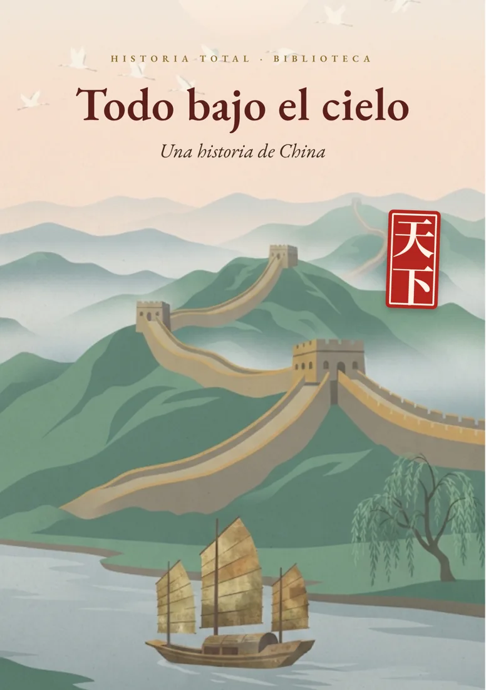
Introducción
Todo bajo el cielo
Hace unos tres mil años, un poeta anónimo de la China de los Zhou escribió unos versos que se aprendieron de memoria generaciones enteras: «Bajo todo el cielo, no hay tierra que no sea del rey; hasta las orillas de la tierra, no hay nadie que no sea su súbdito». Están en el Libro de los Cantares, la colección de poemas más antigua de China.
De esa idea nació una expresión que los chinos usaron durante siglos para referirse a su mundo: tianxia, 天下, «todo bajo el cielo». No significaba exactamente «China», ni tampoco «el mundo entero» tal como lo entendemos hoy. Era el espacio ordenado bajo el Cielo, gobernado por un soberano al que llamaban el Hijo del Cielo, y rodeado por pueblos que, desde Pekín o desde Chang'an, se veían como lejanos y menos civilizados. Por eso el propio nombre del país, Zhongguo, significa «el país del centro».
Hemos elegido ese título porque resume la gran pregunta de este libro: cómo un territorio inmenso, con montañas, desiertos, selvas y dos ríos gigantes, con decenas de pueblos y lenguas distintas, llegó a sentirse a sí mismo como un solo mundo durante más de tres mil años. Y cómo, cada vez que se rompía en pedazos, volvía a unirse.
Lo que vas a leer
Este libro cuenta la historia de China desde las primeras aldeas de campesinos junto al río Amarillo hasta el país que hoy fabrica buena parte de lo que usamos. Lo hace en doce capítulos, cada uno dedicado a una época:
Empieza con el Neolítico y los primeros reinos de bronce, los Shang, que nos dejaron la escritura en huesos de buey. Sigue con la época de Confucio y de los Reinos Combatientes, con el primer emperador, que unificó el país y se hizo enterrar con un ejército de barro, y con los Han, que abrieron la Ruta de la Seda e inventaron el papel. Después llegan la edad de oro de los Tang, los inventos de los Song, la conquista de los mongoles y las grandes flotas de los Ming. Los últimos capítulos tratan del té, el opio y la plata de los Qing, de las revoluciones del siglo XX y de la China de nuestros días.
No es una lista de emperadores y batallas. Hemos querido contar también cómo vivía la gente: qué comían, qué creían, cómo escribían, cómo se hacía la seda o la porcelana. Y aparecen a menudo los lazos con nuestra propia historia, desde Marco Polo hasta el galeón de Manila, que durante dos siglos y medio llevó la plata de América a China.
Cómo leerlo
Cada capítulo se lee en unos quince minutos. Está pensado para leer uno al día, aunque nadie te impide devorarlo de un tirón. Cada uno se abre con una lámina y una entradilla y se cierra con una línea de tiempo para no perder el hilo. Pronto podrás también escucharlo, como un audiolibro.
Si lees el libro en la aplicación Historia Total, encontrarás enlaces a las fichas, mapas y láminas que amplían cada tema.
Los nombres chinos
Los nombres están escritos en pinyin, el sistema oficial para pasar el chino a nuestro alfabeto. Algunas letras no suenan como en castellano. Una guía rápida, aproximada:
- h suena como nuestra j: Huang He, «Juang Je».
- x suena casi como s: Xi'an, «Si-an».
- q suena como ch: Qin, «Chin».
- j y zh suenan como una ch suave o una y: Zhou, «Chou»; Beijing, «Beiching».
- sh suena como la sh inglesa: Shang.
Para las ciudades más conocidas usamos el nombre tradicional en español cuando existe: Pekín, Cantón, Nankín.
Lo que es seguro y lo que no
Todo lo que se cuenta en este libro como un hecho (fechas, nombres, cifras, hallazgos arqueológicos) procede de fuentes comprobadas. Cuando los historiadores no se ponen de acuerdo, lo decimos. Las leyendas se cuentan como leyendas. Y cuando recreamos una escena, el ambiente de una aldea o el ruido de un mercado, lo hacemos a partir de lo que se sabe, sin inventar personajes ni palabras que nadie dijo.
Las fechas más antiguas son aproximadas y van acompañadas de «hacia». Para los años antes de Cristo usamos «a. C.».
Y ahora, empecemos por el principio: por un río del color de la tierra.
El río Amarillo
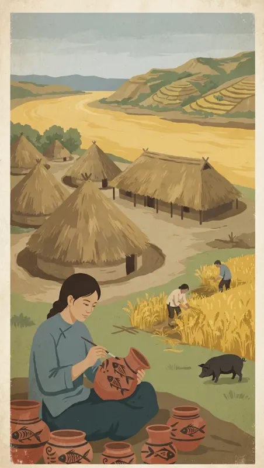
Mucho antes de los emperadores, de la muralla y de la seda, unas aldeas de campesinos aprendieron a vivir junto a dos ríos inmensos. Uno era amarillo y traía la vida y la muerte en la misma crecida. El otro, más al sur, se llenaba de arrozales. De ellos nació China.
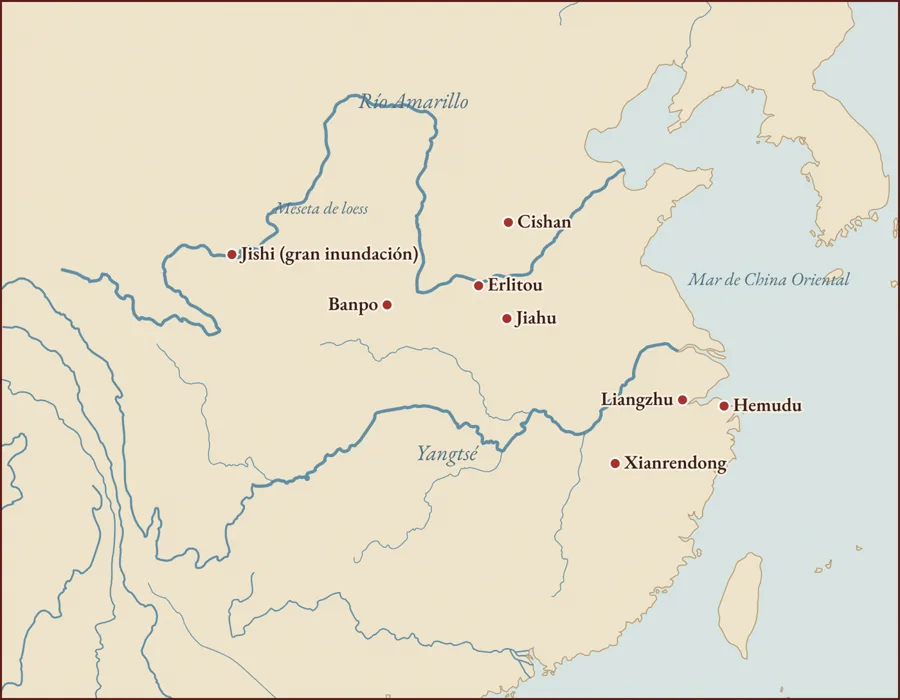
Un río del color de la tierra
Si se mira un mapa de China, dos grandes ríos lo cruzan de oeste a este, desde las montañas del Tíbet hasta el mar. Al norte corre el Huang He, el río Amarillo; al sur, el Yangtsé, el más largo de Asia. Entre los dos, y a lo largo de miles de años, se formó una de las civilizaciones más antiguas y duraderas del mundo.
El río Amarillo debe su nombre a su color. En su curso medio atraviesa una meseta enorme cubierta de loess, un polvo finísimo que el viento fue amontonando durante cientos de miles de años. El agua arrastra tanto de ese limo que parece un río de barro, y donde lo deposita deja una tierra blanda, fértil y fácil de trabajar con herramientas de piedra o de madera. Era un regalo para los primeros agricultores.
Pero el regalo tenía un precio. El limo se acumula en el fondo del cauce, el río sube por encima de las llanuras y, cuando se desborda, puede cambiar de camino y arrasar comarcas enteras. Por eso los chinos lo llamaron también «la pena de China». Toda su historia, desde las aldeas más antiguas hasta los emperadores, es en parte la historia de cómo convivir con ese río: aprovechar su tierra y defenderse de su fuerza.
Ollas antes que campos
La sorpresa empieza antes incluso de la agricultura. En la cueva de Xianrendong, en el sur, los arqueólogos encontraron fragmentos de vasijas de barro cocido de hace unos 20.000 años. Son la cerámica más antigua que se conoce en el mundo. La hicieron cazadores y recolectores en plena Edad de Hielo, y las marcas de fuego que conservan indican que servían para cocinar: quizá para hervir mariscos, hacer caldos o sacar la grasa de los huesos.
Es un detalle que dice mucho. En otras partes del mundo, la cerámica llegó después de la agricultura. En China, las ollas llegaron primero: antes de sembrar, ya sabían guisar.
El grano pequeño del norte
En el norte, la gran planta de la historia china no fue el trigo ni el arroz, sino el mijo, un cereal de grano diminuto que aguanta bien la sequía y crece en suelos pobres. En Cishan, en la provincia de Hebei, los arqueólogos excavaron decenas de fosas cavadas en el loess que servían de graneros. Dentro quedaban restos de mijo de hace entre unos 10.300 y 8.700 años. Es uno de los cultivos de secano más antiguos de toda Asia oriental.
Aquellos silos eran una novedad tan importante como el propio cultivo. Guardar grano significaba poder comer en invierno, sobrevivir a un mal año y quedarse a vivir en el mismo sitio. A partir de entonces, las aldeas del norte se hicieron más grandes y más estables. Junto al mijo, los campesinos criaban cerdos y perros, y la carne de cerdo es todavía hoy la más apreciada de la cocina china.
El arroz del sur
Mientras tanto, en el valle del Yangtsé, más cálido y húmedo, otra planta estaba cambiando la vida de la gente: el arroz. Los habitantes de la cultura de Shangshan, hace unos 10.000 años, ya mezclaban cascarillas de arroz con el barro de sus vasijas. Al principio era arroz silvestre que recogían en los pantanos. Domesticarlo fue un proceso muy lento: durante miles de años fueron eligiendo las plantas cuyos granos no se caían solos de la espiga, hasta tener un arroz que dependía por completo de quien lo sembraba.
Hacia el 5000 a. C., en sitios como Hemudu, cerca de la costa, los arrozales ya eran el centro de la vida. Allí se encontraron casas de madera levantadas sobre pilotes para aislarse del suelo encharcado, con piezas encajadas mediante espigas y muescas, una técnica de carpintería que los constructores chinos usarían durante milenios. También aparecieron montones de cascarilla, azadas hechas con omóplatos de búfalo y restos de bellotas, castañas de agua y pescado.
Así se dibujó un mapa que dura hasta hoy: el norte, del mijo y después del trigo; el sur, del arroz.
Flautas y cerveza en Jiahu
Entre los dos mundos, en la provincia de Henan, estaba la aldea de Jiahu, habitada hacia el 7000 a. C. por campesinos que cultivaban arroz y criaban cerdos. Sus tumbas guardaban una sorpresa: más de treinta flautas hechas con huesos de ala de grulla, con cinco a ocho agujeros. Algunas están tan bien conservadas que todavía se pueden tocar, y dan notas afinadas. Son de los instrumentos musicales más antiguos que siguen sonando.
En las vasijas de Jiahu se encontraron además restos químicos de una bebida fermentada hecha con arroz, miel y frutas. Es una de las bebidas alcohólicas más antiguas conocidas en el mundo. Música y bebida en las tumbas: aquellos campesinos ya celebraban, y ya enterraban a sus muertos con lo que más querían.
Una aldea junto al río: Banpo
En 1953, unos obreros que trabajaban cerca de la actual ciudad de Xi'an encontraron los restos de una aldea neolítica. Era Banpo, una de las primeras y mejor estudiadas de la cultura de Yangshao, que se extendió por el valle del río Amarillo entre el 5000 y el 3000 a. C.
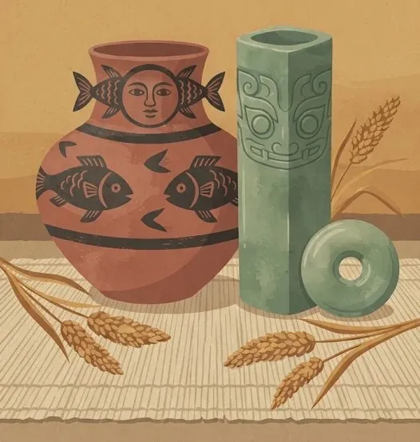
Banpo estuvo habitada entre el 4700 y el 3600 a. C. Ocupaba unas cinco o seis hectáreas y estaba rodeada por un foso de cinco o seis metros de ancho. Dentro había casas redondas de barro y madera, muchas medio enterradas en el suelo, con un techo de paja que bajaba casi hasta la tierra. En el centro se levantaba un edificio mayor, quizá un lugar de reunión.
Fuera del foso estaban los hornos de alfarero, los primeros que se conocen en China, y el cementerio. Los adultos se enterraban en fosas individuales; los niños pequeños, dentro de grandes vasijas junto a las casas, como si sus padres quisieran tenerlos cerca.
La cerámica de Banpo es roja, pintada con dibujos negros: líneas, triángulos y, sobre todo, peces. En algunas vasijas aparece un rostro humano redondo con peces a los lados, como si llevara un tocado. En otras hay pequeños signos grabados, siempre aislados. No eran todavía escritura, quizá eran la marca de cada alfarero, pero muestran las ganas de dejar una señal.
Hoy se puede visitar el yacimiento cubierto por el Museo de Banpo, construido en 1957 en Xi'an.
La ciudad del jade: Liangzhu
Más al sur, en el delta del Yangtsé, cerca de la actual Hangzhou, floreció entre el 3300 y el 2300 a. C. una cultura asombrosa: Liangzhu. Sus habitantes levantaron una ciudad amurallada de unos 3 kilómetros cuadrados, que con sus barrios exteriores llegaba a más de 6. Para entrar había puertas de tierra y puertas de agua, porque la ciudad estaba cruzada por canales, como una pequeña Venecia de la Edad de Piedra.
Aún más sorprendente es lo que construyeron alrededor: un sistema de presas y diques en los valles cercanos, levantado hacia el 3100-2600 a. C., que servía para frenar las riadas, regar y mover barcas. Es uno de los sistemas hidráulicos más antiguos del mundo. Varios siglos antes de que se levantaran las pirámides de Guiza, en China ya se organizaba a miles de personas para domar el agua.
Liangzhu es famosa también por su jade, una piedra durísima que se trabajaba con arena y paciencia durante meses. Las tumbas de los nobles guardaban miles de piezas: discos, hachas ceremoniales y los misteriosos cong, tubos cuadrados por fuera y redondos por dentro, grabados con un rostro de ojos enormes. La pieza más grande que se conoce, el «rey de los cong», pesa 6,5 kilos. Junto a un gran edificio de la ciudad se hallaron también montones de arroz carbonizado, quizá de los graneros de los señores.
En 2019, la UNESCO declaró las ruinas de Liangzhu Patrimonio de la Humanidad. Para muchos historiadores chinos son la prueba de que su civilización tiene 5.000 años.
Murallas de tierra apisonada
Hacia el 2500 a. C., en el valle del río Amarillo, la cultura de Longshan marcó el final del Neolítico. Fue una época de cambios rápidos. Aparecieron las primeras ciudades amuralladas del norte, con murallas de tierra apisonada: se echaba tierra entre dos tablones y se golpeaba capa a capa hasta dejarla dura como la piedra. Esa técnica, llamada hangtu, se usó durante miles de años, también en tramos de la Gran Muralla.
Los alfareros de Longshan, ya con el torno, fabricaban una cerámica negra tan fina que se la llama «cáscara de huevo»: algunas copas tienen paredes de menos de un milímetro. También empezaron a quemar huesos de animales para leer el futuro en las grietas, una costumbre que, mil años después, daría lugar a la primera escritura china.
Las tumbas de Longshan muestran que la sociedad ya no era igual para todos. La mayoría se enterraba con poco o nada; unos pocos, con decenas de vasijas finas, jades y armas. Habían nacido los jefes.
La gran inundación
Todas las historias de China empiezan con una leyenda. Cuentan los textos antiguos que hubo un tiempo en que las aguas cubrieron la tierra y el pueblo vivía en las montañas. Un hombre llamado Yu pasó trece años abriendo canales y dragando ríos, sin entrar en su casa ni una sola vez, hasta que logró que el agua volviera al mar. Por ese mérito, Yu el Grande fundó la primera dinastía, la Xia.
Durante mucho tiempo se pensó que la Xia era solo un mito. En 2016, unos geólogos publicaron un estudio según el cual hacia el 1920 a. C. un deslizamiento de tierra represó el río Amarillo en su curso alto y, al romperse aquella presa natural, provocó una de las mayores riadas de los últimos milenios. Propusieron que ese desastre pudo estar en el origen de la leyenda de Yu. Otros especialistas dudan de la relación, y la pregunta sigue abierta. Pero la historia muestra algo cierto: para los chinos, quien sabe gobernar el agua sabe gobernar el país.
Erlitou: ¿la primera dinastía?
Hacia el 1900 a. C., cerca de la actual Luoyang, creció un lugar que ya no era una aldea ni una simple ciudad: Erlitou. Tenía palacios sobre plataformas de tierra apisonada, calles, talleres y miles de habitantes. Allí se fundieron algunas de las primeras vasijas de bronce de China, copas y calderos para las ceremonias que exigían moldes complejos y muchos artesanos coordinados.
Muchos arqueólogos chinos creen que Erlitou fue la capital de los Xia. Otros piden prudencia, porque no se ha encontrado allí ningún texto que lo diga. Lo seguro es que hacia el 1600 a. C. otro pueblo tomó el relevo en el valle del río Amarillo, y ese pueblo sí dejó escritas sus preguntas a los dioses. Eran los Shang, y sus huesos hablan todavía.
Línea de tiempo
Huesos que hablan
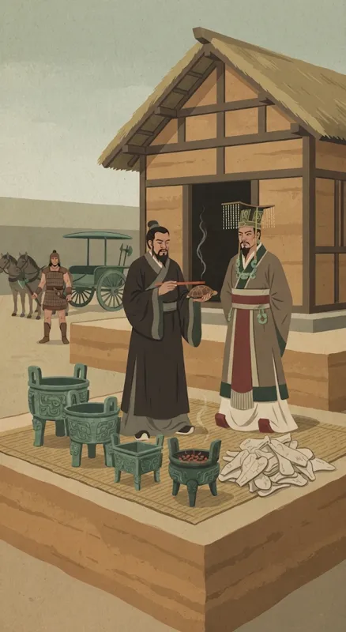
Durante siglos, los campesinos de un pueblo del norte de China vendieron a los boticarios unos huesos viejos con rayas grabadas. Los molían para hacer medicina. Nadie sabía que aquellas rayas eran la escritura más antigua de China, y que contaban las dudas de unos reyes que habían reinado tres mil años antes.
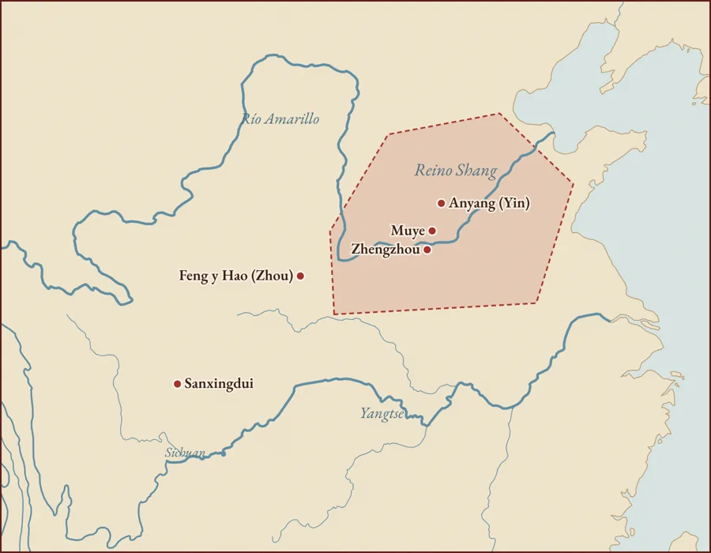
Los huesos de dragón
En la medicina tradicional china se usaban los llamados «huesos de dragón», restos fósiles que se molían y se tomaban en polvo para curar distintos males. En 1899, un alto funcionario de la corte de Pekín y gran estudioso de las inscripciones antiguas, Wang Yirong, compró a un anticuario varios de esos huesos y se fijó en algo extraño: tenían signos grabados que se parecían a los caracteres chinos más antiguos que él conocía.
Se suele contar que los descubrió en una receta que le habían preparado para la malaria. Sea verdad o leyenda, Wang fue el primero en darse cuenta de que aquellos huesos estaban escritos. Pocos años después, otros estudiosos siguieron el rastro de los vendedores hasta su origen: unos campos de labor junto a la ciudad de Anyang, en la provincia de Henan. Debajo de ellos estaba Yin, la última capital de la dinastía Shang.
Preguntar a los antepasados
Los reyes Shang, que gobernaron el valle del río Amarillo más o menos entre el 1600 y el 1046 a. C., no tomaban ninguna decisión importante sin consultar a los espíritus de sus antepasados y a los dioses. Para hacerlo usaban omóplatos de buey o caparazones de tortuga. Los adivinos los limpiaban y pulían, y les excavaban por detrás unos pequeños agujeros en fila.
Después grababan la pregunta en el hueso: «¿Lloverá mañana?», «¿Será buena la cosecha de mijo?», «¿Atacaremos a los enemigos del oeste?», «¿Tendrá la reina un buen parto?». Luego aplicaban una brasa o una vara al rojo en uno de los agujeros hasta que el hueso estallaba con un chasquido. En la otra cara aparecía una grieta en forma de 卜, una línea con una rama al lado. Ese dibujo se convirtió en el carácter que todavía hoy significa «adivinar», y se pronuncia bu, quizá imitando el ruido del hueso al romperse.
El rey o el adivino leían la grieta, decidían si la respuesta era buena o mala y a veces grababan después lo que había pasado de verdad: «Al día siguiente llovió». Gracias a esa costumbre sabemos qué preocupaba a los Shang: el tiempo, las cosechas, las guerras, las enfermedades de la familia real, los nacimientos, los sueños y si los antepasados estaban contentos con las ofrendas.
La escritura que no se rompió
Se han encontrado más de 100.000 fragmentos de huesos oraculares, casi todos de los últimos dos siglos de la dinastía, a partir del reinado de Wu Ding, hacia el 1250 a. C. En ellos aparecen unos 5.000 caracteres distintos. De esos, los especialistas leen con seguridad alrededor de 1.200; el resto sigue siendo un rompecabezas.
Lo extraordinario es que muchos de aquellos signos se reconocen todavía. El carácter de «persona» era un hombrecillo de perfil; el de «sol», un círculo con un punto; el de «montaña», tres picos; el de «agua», una corriente con gotas. Con los siglos se hicieron más cuadrados y abstractos, pero nunca se abandonaron. Un estudiante chino de hoy puede reconocer algunos caracteres escritos hace más de 3.000 años. Ninguna otra escritura del mundo se ha usado de forma continua durante tanto tiempo.
La gran ciudad de Yin
En 1928 empezaron las excavaciones oficiales en Anyang. Durante nueve años, hasta que la guerra con Japón las interrumpió, los arqueólogos sacaron a la luz los cimientos de palacios y templos, talleres de bronce, de hueso y de jade, casas, caminos y un enorme cementerio real. En 1936 hallaron una sola fosa, conocida como YH127, con más de 17.000 piezas inscritas: el archivo de un rey, guardado como se guardan hoy los papeles en un sótano.
Yin no era una ciudad amurallada como las que conocemos, sino un extenso conjunto de barrios, palacios y talleres a orillas del río Huan. Allí vivían el rey, su familia, los sacerdotes y adivinos, los guerreros y miles de artesanos especializados. Los Shang tenían carros de guerra tirados por caballos, arcos compuestos, alabardas de bronce y un calendario de ciclos de sesenta días que los chinos siguieron usando durante milenios.
El bronce de los reyes
Lo que más asombra de los Shang es su bronce. Para fundirlo mezclaban cobre con estaño y plomo, lo calentaban por encima de los mil grados y lo vertían en moldes de barro hechos por piezas, que se encajaban como un puzle alrededor de un núcleo. Era un trabajo que exigía cientos de personas: mineros, carboneros, alfareros, fundidores y decoradores.
Con ese bronce hacían sobre todo vasijas rituales para las ofrendas de comida y vino a los antepasados: calderos de tres o cuatro patas, copas altas y jarras con formas de animales. Muchas están cubiertas con el taotie, una máscara de monstruo con grandes ojos, cuernos y fauces, que nadie sabe del todo qué representaba.
La pieza más grande que se conoce es el caldero de Houmuwu, hallado en Anyang en 1939. Mide 1,33 metros de alto y pesa unos 833 kilos. Lo mandó fundir un rey en honor de su madre, la reina Fu Jing, esposa principal de Wu Ding. Hoy se puede ver en el Museo Nacional de China, en Pekín.
Fu Hao, reina y general
Wu Ding tuvo varias esposas, y una de ellas se convirtió en una de las mujeres más fascinantes de la Antigüedad: Fu Hao. Su nombre aparece en más de cien huesos oraculares. El rey preguntaba por sus partos y por su salud, pero también por sus batallas. Fu Hao dirigía ceremonias como sacerdotisa y mandaba ejércitos. Según los huesos, combatió contra los pueblos vecinos del reino, como los tufang, los qiang o los ba; según algunos autores, llegó a mandar a unos 13.000 soldados.
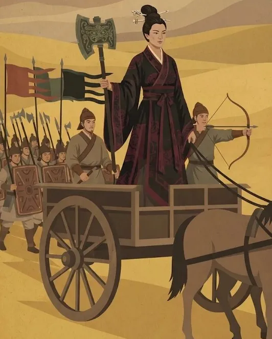
En 1976, la arqueóloga Zheng Zhenxiang encontró su tumba en Anyang. Era la única tumba real Shang que había llegado intacta, sin saquear. Dentro había 468 objetos de bronce, entre ellos vasijas rituales con su nombre y armas, más de 700 piezas de jade, unos 500 objetos de hueso, casi todos horquillas para el pelo, y más de 6.800 conchas de cauri, que se usaban como moneda. Con ella fueron enterrados también dieciséis personas y seis perros.
Fu Hao murió hacia el 1200 a. C., antes que su marido. Los huesos muestran que Wu Ding siguió preguntando por ella después de su muerte, para saber si su espíritu estaba en paz.
La cara oscura
Los Shang tenían también un lado terrible. Creían que los antepasados y los dioses necesitaban ofrendas, y no solo de comida y vino. En los alrededores de las grandes tumbas reales de Anyang se han encontrado cientos de fosas con víctimas humanas sacrificadas, a menudo prisioneros de guerra de los pueblos vecinos, sobre todo de los qiang. Algunos reyes fueron enterrados con decenas de acompañantes, guardias, sirvientes y caballos con sus carros, para que les sirvieran en la otra vida.
Los huesos oraculares lo cuentan con una frialdad que estremece: preguntan cuántos prisioneros ofrecer y a qué antepasado. Es un recordatorio de que el esplendor del bronce y de la escritura convivía con una violencia que a nosotros nos resulta difícil de imaginar.
Máscaras en Sichuan
Durante mucho tiempo se pensó que la civilización china había nacido solo en el valle del río Amarillo. Un hallazgo cambió esa idea. En 1986, en Sanxingdui, en la provincia de Sichuan, unos obreros que sacaban barro para hacer ladrillos encontraron dos fosas llenas de objetos de hacia el 1200 a. C.
Eran distintos a todo lo conocido: enormes máscaras de bronce con ojos saltones y orejas desplegadas como alas, cabezas cubiertas con láminas de oro, una estatua de un hombre de 2,6 metros de altura y un árbol de bronce de casi cuatro metros con pájaros posados en sus ramas. Había también colmillos de elefante y jades. Todo había sido roto y quemado antes de enterrarlo, quizá en una ceremonia.
Sanxingdui fue una civilización contemporánea de los Shang, que conocía el bronce pero no dejó escritura. Desde 2020 se han abierto seis fosas más. La antigua China era más variada de lo que contaban los libros: no un solo pueblo, sino muchos.
El Mandato del Cielo
Hacia el 1046 a. C., un pueblo del oeste, los Zhou, se alzó contra el último rey Shang, Di Xin. En la llanura de Muye, no lejos de la capital, el ejército de Wu, rey de los Zhou, con sus aliados y cientos de carros de guerra, derrotó a los Shang. Según la tradición, Di Xin se encerró en su palacio con sus tesoros y se quemó dentro.
Los Zhou contaron después que Di Xin había sido un tirano cruel, borracho y caprichoso. Puede que exageraran: los vencedores escribieron la historia, y los huesos de los Shang no hablan de esas maldades. Pero para justificar su victoria proclamaron una idea que marcaría a China durante tres mil años: el Mandato del Cielo. El Cielo concede el poder a un soberano justo y se lo retira si gobierna mal. Las sequías, las inundaciones y las revueltas eran la señal de que una dinastía había perdido el Mandato, y entonces era legítimo derrocarla.
Con esa idea, cada nueva dinastía china se presentaría como la elegida del Cielo, y cada caída se explicaría como un castigo merecido. Los Zhou reinarían casi ocho siglos. Pero con el tiempo su poder se iría deshaciendo, y de aquel desorden nacería la época más brillante y más violenta del pensamiento chino.
Línea de tiempo
Cien escuelas en guerra
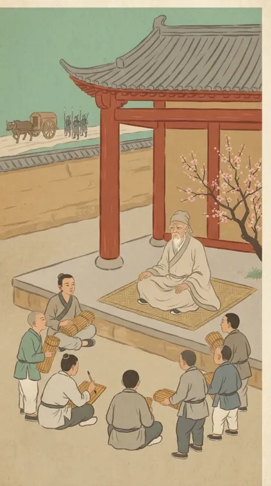
Durante cinco siglos, el reino de los Zhou se fue rompiendo en pedazos que luchaban entre sí cada vez con más hierro y más soldados. Y en medio de ese caos, unos maestros que iban de corte en corte buscando un rey que los escuchara inventaron casi todo lo que China pensaría durante los dos mil años siguientes.
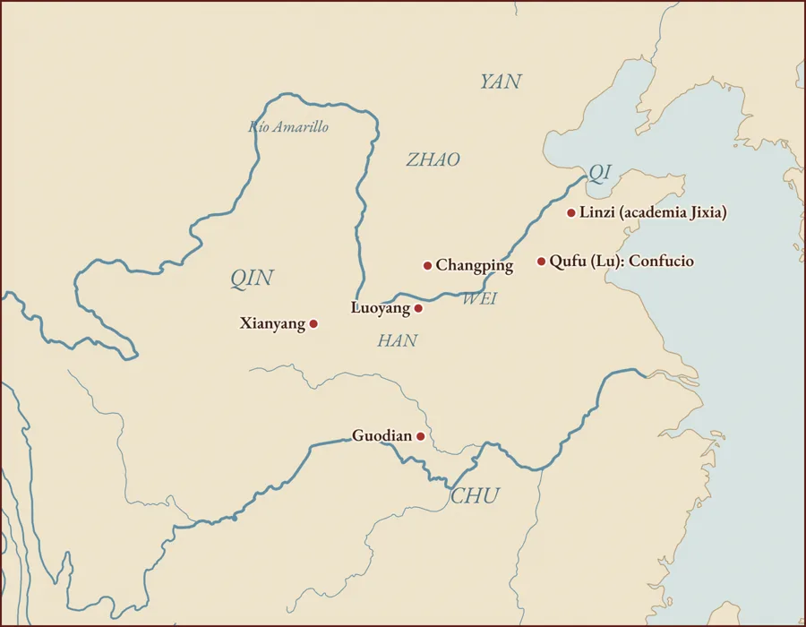
La capital en llamas
En el año 771 a. C., la capital de los Zhou, cerca de la actual Xi'an, fue asaltada por pueblos del oeste aliados con nobles rebeldes. El rey You murió en la huida. Una leyenda muy conocida cuenta que había encendido muchas veces las hogueras de alarma solo para divertir a su concubina favorita, que se reía al ver llegar a los señores con sus ejércitos para nada. Cuando el ataque fue de verdad, nadie acudió. Es una historia con moraleja, probablemente inventada después, pero el desastre fue real.
Los Zhou trasladaron su corte al este, a Luoyang. Desde entonces, el rey siguió siendo el Hijo del Cielo y presidía los grandes ritos, pero ya no mandaba. El poder pasó a los señores que gobernaban los distintos territorios, y que cada vez se comportaban más como reyes independientes.
Primaveras y otoños
A la primera parte de esta época se la llama periodo de las Primaveras y Otoños (770-476 a. C.), por el nombre de la crónica del pequeño estado de Lu, que anotaba año por año lo que pasaba. Al principio había más de cien estados, grandes y pequeños. Se aliaban, se casaban entre ellos, se traicionaban y se tragaban unos a otros. El más fuerte de cada momento se hacía reconocer como «hegemón», una especie de protector de los demás en nombre del rey Zhou.
Mientras tanto, el país cambiaba por debajo. Se extendió el uso del hierro, más barato que el bronce: rejas de arado, azadas y hoces permitieron roturar tierras nuevas, y se excavaron canales de riego. Las ciudades crecieron. Aparecieron las primeras monedas de bronce, con formas curiosas: unas parecían pequeñas palas y otras, cuchillos. Y se difundió la ballesta, un arma que cualquier campesino podía aprender a usar en pocos días.
Confucio, el maestro
En el pequeño estado de Lu nació en el 551 a. C. un hombre llamado Kong Qiu, al que sus discípulos llamaron Kong Fuzi, «el maestro Kong». En Occidente lo conocemos como Confucio. Venía de una familia noble empobrecida, trabajó de joven como administrador de graneros y de rebaños, y llegó a ocupar algún cargo en la corte de Lu. Pero su sueño era aconsejar a un gobernante que pusiera en práctica sus ideas, y no lo consiguió. Pasó unos catorce años viajando de estado en estado con sus discípulos, sin encontrar quién le hiciera caso, y volvió a Lu a enseñar. Murió en el 479 a. C. convencido de haber fracasado.
Sus discípulos reunieron sus enseñanzas en un libro, las Analectas. Confucio pensaba que el desorden de su tiempo se debía a que la gente había olvidado sus deberes. Un buen gobierno no se basaba en el castigo, sino en el ejemplo: si el gobernante era justo y respetuoso, el pueblo lo imitaría. Daba mucha importancia a los ritos y a las buenas formas, al respeto a los padres y a los mayores, y a la educación. Para él, cualquiera podía llegar a ser un «caballero», una persona noble, no por su sangre, sino por su conducta y su estudio.
Algunas de sus frases se siguen citando hoy. Cuando un discípulo le preguntó si había una palabra que pudiera guiar toda una vida, Confucio respondió: «Lo que no quieras para ti, no lo hagas a los demás». Y sobre el estudio: «Aprender sin pensar es inútil; pensar sin aprender es peligroso».
Nadie le hizo caso en vida. Pero siglos después, sus ideas se convirtieron en la doctrina oficial del Estado chino, y durante dos mil años todo aspirante a funcionario tuvo que aprenderse sus libros de memoria.
El viejo maestro y el camino
La tradición cuenta que, en la misma época, vivió un sabio llamado Laozi, «el viejo maestro», archivero de la corte de los Zhou. Cansado del mundo, se marchó hacia el oeste montado en un buey, y al llegar a un paso de la frontera, el guardián le pidió que dejara escrita su sabiduría. Laozi escribió entonces un librito de unos cinco mil caracteres, el Daodejing, y desapareció para siempre.
Probablemente es una leyenda, y muchos historiadores dudan de que Laozi existiera. Pero el libro sí existe: en 1993, en una tumba de Guodian, en la provincia de Hubei, aparecieron tiras de bambú escritas hacia el 300 a. C. con buena parte de su texto. Son la copia más antigua que se conoce.
El Daodejing habla del Tao, el «camino», la fuerza misteriosa que mueve el universo y que no se puede explicar con palabras. Su consejo es lo contrario del de Confucio: no forzar las cosas, no acumular, no presumir, dejar que todo siga su curso natural. Pone como ejemplo el agua, que es lo más blando del mundo y, sin embargo, desgasta la roca más dura. De esas ideas nació el taoísmo, que con los siglos se convirtió también en religión.
Las cien escuelas
Confucio y Laozi no estaban solos. En los siglos siguientes, los gobernantes, desesperados por ganar ventaja sobre sus rivales, acogieron en sus cortes a todo tipo de pensadores. Los chinos llamaron a esta época la de las Cien Escuelas. En el estado de Qi llegó a existir una especie de academia, junto a la puerta Ji de su capital, donde los sabios cobraban un sueldo por pensar y discutir.
Mozi predicaba el amor universal: había que querer a todos por igual, no solo a la propia familia, y la guerra de conquista era el peor de los crímenes. Sus seguidores eran expertos ingenieros que acudían a defender las ciudades atacadas. Mencio, el gran seguidor de Confucio, defendía que el ser humano nace bueno y que un pueblo maltratado tiene derecho a derribar a un mal rey. Xunzi pensaba lo contrario: nacemos egoístas, y solo la educación nos corrige. Zhuangzi, taoísta, escribió que una vez soñó que era una mariposa, y al despertar ya no sabía si era un hombre que había soñado ser mariposa o una mariposa que soñaba ser hombre.
Y hubo también un experto en la guerra, Sunzi, al que se atribuye el Arte de la guerra, un tratado que todavía se estudia en academias militares y escuelas de negocios. Su idea más famosa es que el arte supremo de la guerra consiste en someter al enemigo sin combatir.
Los Reinos Combatientes
A partir del 475 a. C., la competencia se volvió una lucha a muerte. Es el periodo de los Reinos Combatientes. De los cien estados quedaban siete grandes: Qin, Chu, Qi, Yan, Han, Zhao y Wei. Sus reyes ya no fingían obedecer a los Zhou. Movilizaban ejércitos de cientos de miles de campesinos, armados con espadas de hierro y ballestas, y levantaban largas murallas de tierra apisonada para protegerse unos de otros y de los jinetes nómadas del norte. Algunos de esos muros serían el comienzo de la Gran Muralla.
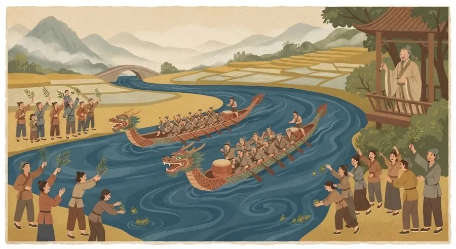
La guerra cambió también las costumbres. Hacia el 307 a. C., el rey Wuling de Zhao ordenó a sus soldados vestir pantalones, como los nómadas de la estepa, en lugar de las largas túnicas chinas, para poder montar a caballo y disparar el arco al galope. Fue un escándalo en su corte, pero creó la primera caballería china.
Qin, el reino de las leyes
De todos los reinos, el que mejor se preparó fue Qin, en el extremo oeste, el más alejado y el que los demás consideraban más rudo. Hacia el 356 a. C., su duque puso el gobierno en manos de un consejero llamado Shang Yang, seguidor de la escuela de los legistas. Para ellos no servían ni el ejemplo de Confucio ni el amor de Mozi: el Estado debía basarse en leyes claras, premios y castigos.
Shang Yang repartió el pueblo en grupos de familias que respondían unas de otras: si alguien cometía un delito y los vecinos no lo denunciaban, todos eran castigados. Los nobles perdían sus privilegios si no los ganaban en la guerra, y cualquier campesino podía ascender en una escala de veinte rangos según las cabezas enemigas que cortara en combate. Se premiaba a quien cultivaba la tierra y se despreciaba el comercio.
Sima Qian, el gran historiador chino, cuenta que para que el pueblo creyera en las nuevas leyes, Shang Yang mandó colocar un tronco a la puerta sur de la capital y prometió una recompensa a quien lo llevara a la puerta norte. Nadie se fiaba. Subió la recompensa, un hombre lo hizo, y recibió lo prometido. Desde entonces, todos supieron que las órdenes de Qin se cumplían.
Shang Yang se ganó muchos enemigos. Cuando murió el duque que lo protegía, en el 338 a. C., fue acusado de rebelión y ejecutado de la forma más cruel. Pero sus leyes siguieron vigentes, y convirtieron a Qin en una máquina de guerra.
Changping
La prueba llegó en Changping, entre el 262 y el 260 a. C., donde Qin se enfrentó al reino de Zhao. Durante meses, el veterano general de Zhao, Lian Po, resistió atrincherado. Pero el rey de Zhao, impaciente, lo sustituyó por Zhao Kuo, un joven que conocía los tratados militares de memoria y nunca había mandado un ejército. Qin, en secreto, puso al frente de sus tropas a su mejor general, Bai Qi. Zhao Kuo atacó, cayó en una trampa y quedó rodeado. Tras semanas sin comida, el ejército de Zhao se rindió.
Según Sima Qian, que escribió más de un siglo después, Bai Qi mandó matar a cientos de miles de prisioneros, muchos enterrados vivos. Las cifras de los cronistas antiguos suelen estar exageradas, pero en el lugar se han encontrado grandes fosas llenas de huesos. Después de Changping, ningún reino pudo ya frenar a Qin. La pregunta no era si unificaría China, sino cuándo.
Línea de tiempo
El primer emperador
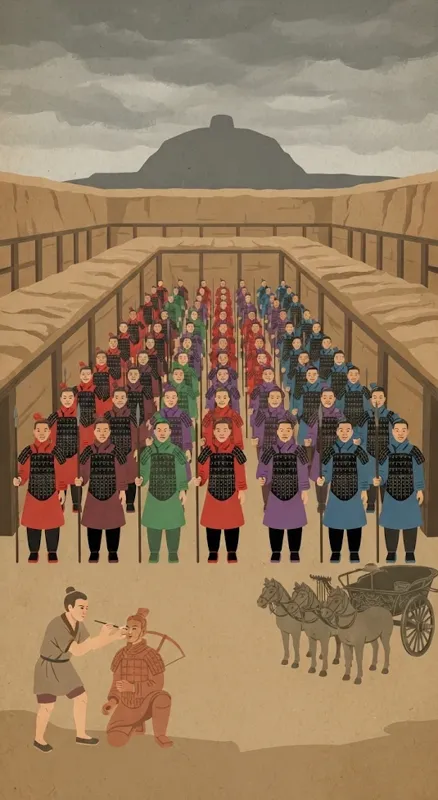
En solo nueve años, un rey de Qin conquistó los seis reinos rivales y se proclamó algo que nunca había existido: emperador de toda China. Unificó la escritura, las medidas y los caminos, levantó murallas y palacios, persiguió la inmortalidad y se hizo enterrar con un ejército de barro. Su dinastía apenas le sobrevivió cuatro años, pero el país que creó duraría más de dos mil.
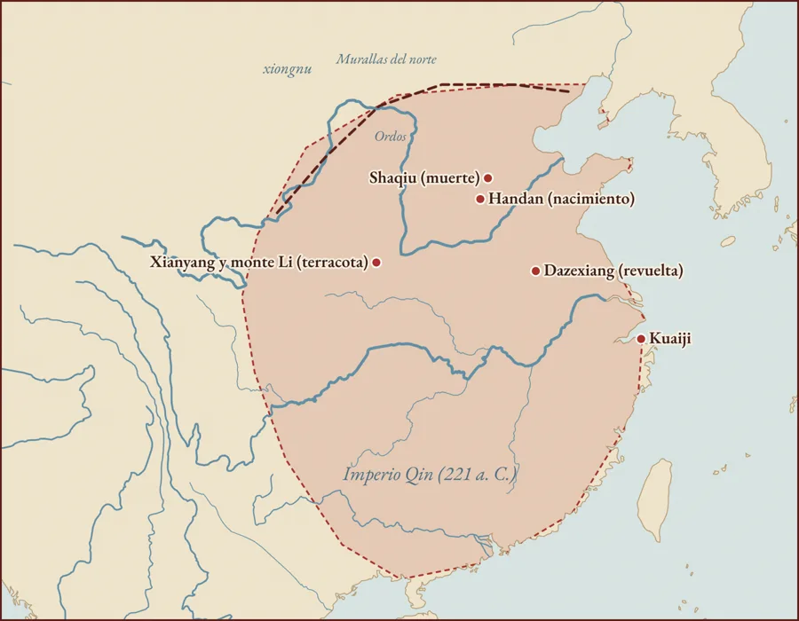
Un niño en la corte de Qin
Ying Zheng nació en el año 259 a. C. en Handan, la capital del reino de Zhao, donde su padre, un príncipe de Qin, vivía como rehén. Era una costumbre de la época: los reinos se intercambiaban príncipes como garantía de sus tratados. Con los años, gracias a las intrigas de un rico comerciante llamado Lü Buwei, el padre de Zheng llegó a ser rey de Qin. Murió pronto, y en el 246 a. C. el muchacho heredó el trono con solo trece años.
Durante su juventud gobernaron otros por él. Pero al hacerse mayor, Zheng aplastó una conspiración, apartó a Lü Buwei y tomó el poder en sus manos. Tenía a su lado a un consejero brillante e implacable, Li Si, seguidor de las ideas legistas de Shang Yang. Y tenía el ejército mejor organizado de su tiempo.
La daga en el mapa
Los otros reinos sabían lo que se les venía encima. En el 227 a. C., el príncipe heredero de Yan envió a la corte de Qin a un asesino llamado Jing Ke. Se presentó como embajador con dos regalos: la cabeza de un general traidor que el rey de Qin buscaba y un mapa enrollado de las mejores tierras de Yan. Al desenrollar el mapa ante el rey, apareció escondida una daga envenenada.
Jing Ke agarró la manga del rey y le lanzó una cuchillada, pero la manga se rasgó y Zheng escapó corriendo alrededor de una columna. Nadie podía ayudarle: las leyes de Qin prohibían que nadie subiera armado al salón del trono. Por fin, un médico le arrojó su bolsa de medicinas al asesino y el rey consiguió sacar su larga espada y herirlo. Jing Ke murió allí mismo. La historia se ha contado durante siglos en China, en obras de teatro y en películas.
Seis reinos en nueve años
Después de aquello, Qin no se detuvo. Cayeron uno tras otro: Han en el 230 a. C., Zhao en el 228, Wei en el 225, Chu, el más grande, en el 223, Yan en el 222 y, finalmente, Qi, que se rindió sin combatir en el 221 a. C. Por primera vez, todas las tierras entre las estepas del norte y los ríos del sur obedecían a un solo soberano.
El título de «rey» se le quedaba pequeño. Zheng tomó dos palabras reservadas a los dioses y a los sabios legendarios, huang y di, y se hizo llamar Shi Huangdi, «el Primer Emperador». Sus sucesores, decretó, se llamarían Segundo Emperador, Tercer Emperador, y así durante diez mil generaciones.
Un solo país, una sola medida
El Primer Emperador no quería un conjunto de reinos conquistados, sino un solo Estado. Abolió los antiguos señoríos y dividió el imperio en 36 comandancias gobernadas por funcionarios que él nombraba y destituía. Mandó desarmar a la población y fundir las armas para hacer campanas y estatuas gigantes.
Y lo unificó todo. Cada reino tenía su propia forma de escribir los caracteres: el emperador impuso una sola. Cada uno tenía sus propias pesas, medidas y monedas: se impuso una moneda redonda con un agujero cuadrado en el centro, la forma que tendrían las monedas chinas durante dos mil años. Se fijó incluso la distancia entre las ruedas de los carros, para que todos pudieran circular por los mismos surcos de los caminos de tierra. Se construyeron miles de kilómetros de carreteras y canales.
La escritura común fue quizá la herencia más duradera. Los chinos de distintas regiones hablaban lenguas tan diferentes que no se entendían, pero desde entonces podían leer los mismos textos. Eso sigue siendo así hoy.
La muralla
En el norte, más allá de los campos de cultivo, vivían los xiongnu, pastores nómadas a caballo que asaltaban las aldeas chinas. En el 215 a. C., el general Meng Tian los expulsó de la gran curva del río Amarillo. Después, el emperador mandó unir y alargar los muros que los antiguos reinos del norte habían levantado, para cerrar la frontera.
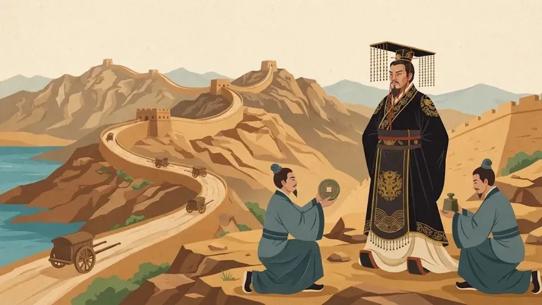
Cientos de miles de soldados, campesinos y condenados trabajaron en aquellas murallas de tierra apisonada, en condiciones terribles. Muchos murieron allí, y una leyenda muy popular cuenta que una mujer, Meng Jiangnü, lloró tanto al saber que su marido había muerto en la obra que un tramo de la muralla se derrumbó y dejó ver sus huesos.
La Gran Muralla de piedra y ladrillo que hoy visitan los turistas no es la de Qin: es mucho más tardía, de la dinastía Ming. Pero la idea de cerrar el norte con un muro nació con el Primer Emperador.
Libros quemados
En el 213 a. C., a propuesta de Li Si, el emperador ordenó quemar los libros de historia de los antiguos reinos y de las escuelas filosóficas, sobre todo los de los seguidores de Confucio, que comparaban su gobierno con el de los sabios reyes del pasado. Solo se salvaron los libros de medicina, agricultura y adivinación, y las copias de la biblioteca imperial. Al año siguiente, según el historiador Sima Qian, mandó enterrar vivos a cerca de 460 sabios.
Esta segunda historia fue durante siglos el gran símbolo de su tiranía. Hoy muchos historiadores creen que fue exagerada por los confucianos, sus grandes enemigos, y que los ejecutados fueron más bien magos y charlatanes que le habían prometido la inmortalidad.
El elixir de la vida
Porque el hombre que lo había conquistado todo tenía miedo a morir. El Primer Emperador recorrió varias veces su imperio, subió a montañas sagradas y buscó sin descanso el elixir de la inmortalidad. Envió al mar oriental al mago Xu Fu con cientos de muchachos y muchachas para encontrar unas islas donde vivían los inmortales. Nunca volvieron. Una leyenda dice que llegaron a Japón.
Murió en el verano del 210 a. C., durante uno de sus viajes, a los 49 años. Sus consejeros temieron que, al saberse la noticia lejos de la capital, estallara una rebelión. Li Si y el eunuco Zhao Gao ocultaron su muerte: siguieron llevando comida a su carruaje como si viviera y, cuando el cuerpo empezó a oler, colocaron alrededor carros cargados de pescado podrido para disimularlo. Por el camino falsificaron una carta del emperador que ordenaba suicidarse al heredero, el príncipe Fusu, y al general Meng Tian, y pusieron en el trono a un hijo menor, más fácil de manejar.
Un ejército de barro
El 29 de marzo de 1974, unos campesinos de un pueblo cercano a Xi'an excavaban un pozo cuando sacaron trozos de una figura de barro del tamaño de un hombre. Habían encontrado el ejército de terracota.
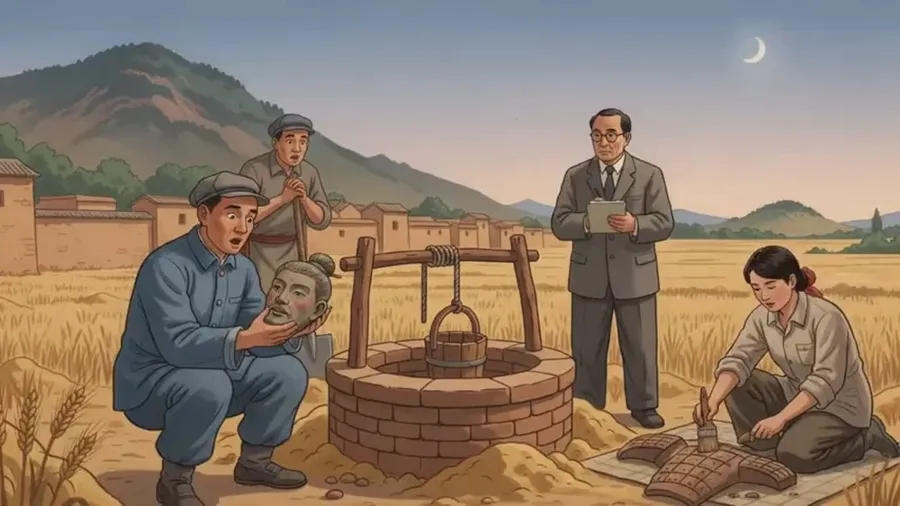
En tres grandes fosas, a un kilómetro y medio de la tumba del emperador, hay más de 8.000 soldados de tamaño natural, de entre 1,75 y 2 metros de altura, además de 130 carros con 520 caballos y 150 caballos de caballería. Son arqueros, infantes, aurigas y oficiales, colocados en formación de batalla y mirando al este, hacia los reinos conquistados. Se fabricaron a partir de unos pocos modelos de cara, pero cada uno se terminó a mano y tiene rasgos, peinado y gesto propios. Llevaban armas de bronce de verdad y estaban pintados de colores vivos, que se desprenden en pocos minutos al contacto con el aire. Por eso la mayor parte del ejército sigue todavía enterrada.
La tumba del emperador, bajo una colina artificial al pie del monte Li, nunca se ha abierto. Sima Qian contó que dentro había un palacio con el cielo pintado en el techo y el mapa del imperio en el suelo, con ríos y mares de mercurio que corrían movidos por máquinas, y ballestas preparadas para disparar contra los ladrones. Durante mucho tiempo se pensó que era una fantasía. Pero los análisis del suelo de la colina han encontrado niveles de mercurio muy superiores a los normales.
Una dinastía de quince años
El Segundo Emperador fue un juguete en manos de Zhao Gao, y el imperio se hundió en muy poco tiempo. En el 209 a. C., un grupo de campesinos reclutados para la frontera quedó detenido por las lluvias. Las leyes de Qin castigaban con la muerte llegar tarde, así que sus jefes, Chen Sheng y Wu Guang, pensaron que no tenían nada que perder y se sublevaron. Fue la primera gran revuelta campesina de la historia china, y prendió en todo el imperio.
En el 206 a. C., los rebeldes entraron en la capital y quemaron sus palacios. La dinastía Qin, que iba a durar diez mil generaciones, había durado quince años. Pero el imperio que había creado no desapareció. Uno de los jefes rebeldes, un antiguo funcionario de aldea llamado Liu Bang, lo heredaría casi intacto.
Línea de tiempo
La seda y el papel
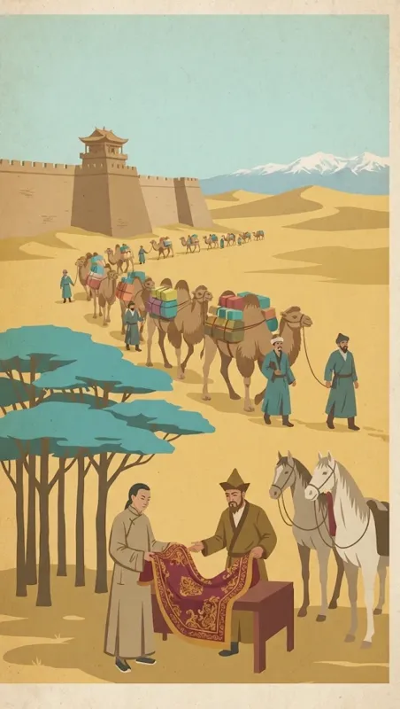
Un campesino convertido en emperador fundó la dinastía que dio nombre a los chinos: todavía hoy se llaman a sí mismos «el pueblo han». Durante cuatro siglos, sus caravanas llevaron la seda hasta Roma, sus funcionarios estudiaron a Confucio y sus artesanos inventaron algo que cambiaría el mundo: el papel.
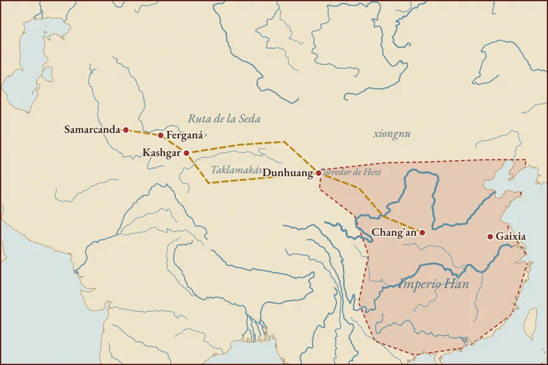
El campesino que llegó a emperador
Tras la caída de los Qin, dos jefes rebeldes se disputaron el imperio. Uno era Xiang Yu, un noble guerrero de enorme fuerza y mal carácter. El otro, Liu Bang, un antiguo jefe de policía de aldea, de origen campesino, que sabía escuchar a sus consejeros y ganarse a la gente. Durante cuatro años lucharon sin descanso, hasta que en el 202 a. C., en Gaixia, Liu Bang rodeó al ejército de Xiang Yu. Cuenta la tradición que, por la noche, los soldados de Liu Bang cantaron canciones del país de Xiang Yu para que sus hombres creyeran que su tierra ya había caído y perdieran el ánimo. Xiang Yu se quitó la vida.
Liu Bang se proclamó emperador y fundó la dinastía Han, que gobernaría China, con una breve interrupción, durante más de cuatro siglos, hasta el año 220. Fue tan importante que los chinos se llaman todavía «pueblo han» y a su escritura la llaman «caracteres han».
El nuevo emperador conservó el Estado centralizado que habían creado los Qin, pero suavizó sus leyes más crueles y bajó los impuestos. La capital se instaló en Chang'an, junto a la actual Xi'an, que llegó a ser una de las ciudades más grandes del mundo.
El emperador Wu
El gran soberano de los Han fue el emperador Wu, que reinó más de medio siglo, del 141 al 87 a. C. Hizo del pensamiento de Confucio la doctrina oficial del Estado y en el 124 a. C. fundó una academia imperial para formar a los futuros funcionarios en los clásicos confucianos. Desde entonces, en China, el camino para llegar al poder pasaba por los libros, y no solo por la cuna o la espada.
Para pagar sus guerras, el emperador Wu convirtió en monopolio del Estado la venta de la sal y del hierro, dos productos que todo el mundo necesitaba. Y lanzó grandes campañas contra los xiongnu, los nómadas del norte, que hasta entonces habían obligado a los Han a pagarles tributo y a entregar princesas en matrimonio a sus jefes para mantener la paz. Sus ejércitos los expulsaron hacia el norte y conquistaron el corredor de Hexi, una estrecha franja de oasis entre montañas y desiertos que conducía hacia el oeste.
En el año 2 de nuestra era, los funcionarios Han hicieron un censo de todo el imperio: contaron 57.671.400 personas. Es uno de los censos más antiguos del mundo que se conservan completos.
Zhang Qian, el explorador
En el 138 a. C., el emperador Wu envió hacia el oeste a un oficial llamado Zhang Qian con un centenar de hombres. Su misión era encontrar a los yuezhi, un pueblo que los xiongnu habían expulsado de sus tierras, y convencerlos de atacar juntos a su enemigo común.
Nada más partir, los xiongnu lo capturaron. Pasó trece años prisionero, se casó con una mujer xiongnu y tuvo un hijo. Pero nunca perdió el bastón de embajador que le había dado el emperador. Un día escapó, siguió su camino hacia el oeste, encontró a los yuezhi en lo que hoy es Afganistán y Uzbekistán, y no logró la alianza. Volvió a Chang'an hacia el 125 a. C. De los cien hombres que habían salido, solo regresaron él y su guía.
Su informe asombró a la corte. Zhang Qian contó que más allá de las montañas había ciudades, mercados y reinos ricos, y que en el valle de Ferganá se criaban unos caballos maravillosos, altos y veloces, que «sudaban sangre». El emperador quería esos caballos para su caballería y envió ejércitos a buscarlos. Detrás de los soldados llegaron los comerciantes. Había nacido la Ruta de la Seda.
La Ruta de la Seda
En realidad no era una sola ruta, sino una red de caminos de caravanas que unía China con Asia central, Persia, la India y el Mediterráneo. Pocos la recorrían entera: las mercancías pasaban de mano en mano, de oasis en oasis, a lomos de camellos bactrianos, y su precio se multiplicaba en cada etapa.
Hacia el oeste viajaba sobre todo la seda, un tejido ligero y brillante que solo los chinos sabían fabricar. Durante siglos guardaron el secreto: había que criar unos gusanos que se alimentan de hojas de morera, dejar que tejieran su capullo, hervirlo y devanar el hilo, que puede medir cientos de metros. Una leyenda atribuía el descubrimiento a una emperatriz de tiempos remotos, a la que un capullo le cayó en una taza de té caliente y se deshizo en un hilo finísimo.
En Roma, la seda causó furor entre los ricos, y algunos se escandalizaban. El escritor Plinio el Viejo se quejaba de que cada año salían del imperio enormes sumas de dinero hacia la India, Arabia y el país de los seres, como llamaban los romanos a los chinos. Ni Roma ni China sabían gran cosa la una de la otra. En el año 97, un enviado chino, Gan Ying, llegó hasta las orillas de un mar en el oeste, probablemente el golfo Pérsico, con la misión de alcanzar Roma, pero los marineros le dijeron que la travesía podía durar años y se dio la vuelta.
Hacia el este llegaban caballos, vidrio, plata, lana, uvas, alfalfa y, más tarde, una religión nueva que venía de la India: el budismo.
Historiadores y sabios
Bajo los Han, China empezó a escribir su propia historia. El gran historiador Sima Qian dedicó su vida a escribir las Memorias históricas, que contaban el pasado de China desde los tiempos legendarios hasta su propia época. Por defender ante el emperador Wu a un general caído en desgracia fue condenado a la castración, un castigo humillante que muchos evitaban suicidándose. Él lo aceptó para poder terminar su obra. Gracias a ese libro conocemos buena parte de lo que se cuenta en los capítulos anteriores, y todas las dinastías posteriores lo imitaron.
Los sabios Han observaban el cielo, registraban los cometas y los eclipses y estudiaban la medicina, las matemáticas y las máquinas. En el año 132, el astrónomo Zhang Heng presentó un aparato de bronce capaz de detectar terremotos lejanos: una gran vasija con ocho dragones en los costados, cada uno con una bola en la boca. Cuando la tierra temblaba, un mecanismo interior hacía que el dragón que apuntaba hacia el terremoto dejara caer su bola en la boca de un sapo de bronce.
El papel
Hasta entonces, los chinos escribían sobre tiras de bambú atadas con cordeles, que pesaban mucho y ocupaban carros enteros, o sobre seda, que era carísima. Los arqueólogos han encontrado algunos trozos de un papel tosco hecho con fibras de cáñamo desde el siglo II a. C., que se usaba sobre todo para envolver. Pero fue en el año 105 cuando un eunuco de la corte llamado Cai Lun presentó al emperador un método para fabricar un papel fino y barato.
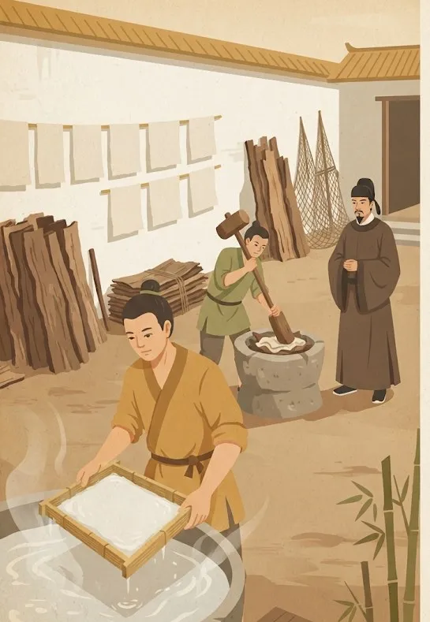
Su receta usaba corteza de árbol, restos de cáñamo, trapos viejos y redes de pesca. Se cocía todo hasta deshacerlo en una pasta, se golpeaba, se mezclaba con agua y se recogía en un tamiz de madera. Al secarse, quedaba una hoja delgada y flexible. El papel tardaría más de mil años en llegar a Europa, a través del mundo islámico. Uno de los primeros lugares donde se fabricó en Europa fue Xàtiva, en Valencia, en el siglo XII.
Turbantes amarillos
A partir del siglo II, el imperio Han empezó a pudrirse por dentro. Los emperadores subían al trono siendo niños y la corte se convirtió en un campo de batalla entre las familias de las emperatrices y los eunucos de palacio. Los grandes terratenientes se quedaban con las tierras de los campesinos arruinados, que tenían que trabajar para ellos o echarse a los caminos.
En el año 184, un curandero taoísta llamado Zhang Jue, que anunciaba la llegada de una nueva era, levantó a cientos de miles de campesinos. Se ataban a la cabeza pañuelos amarillos, y por eso se les llamó los Turbantes Amarillos. El gobierno los aplastó, pero para hacerlo tuvo que dejar que los generales reclutaran sus propios ejércitos. Esos generales ya no obedecerían a nadie.
En el año 220, uno de ellos, Cao Pi, obligó al último emperador Han a abdicar. China se partió en tres reinos rivales, y empezó una larga época de división que duraría casi cuatro siglos.
Línea de tiempo
La edad de oro
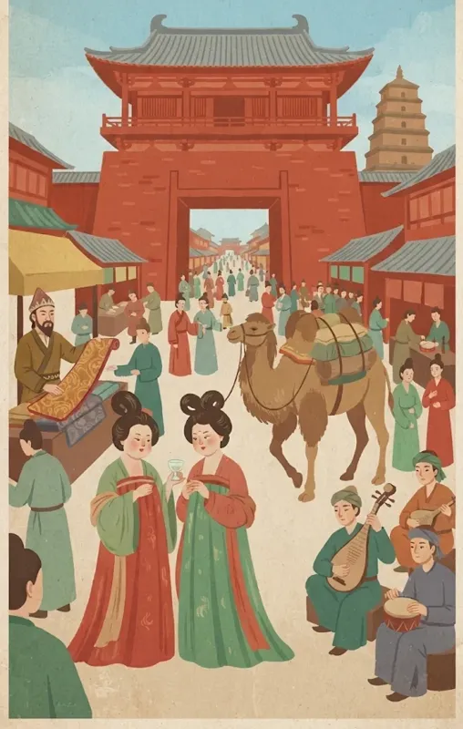
Tras casi cuatro siglos de división, China volvió a unirse y vivió su época más abierta y cosmopolita. En Chang'an, la ciudad más grande del mundo, se cruzaban monjes de la India, mercaderes persas y músicos de Asia central. Una mujer llegó a ser emperador, los poetas escribieron versos que todavía se aprenden en la escuela y alguien imprimió el libro fechado más antiguo del mundo.
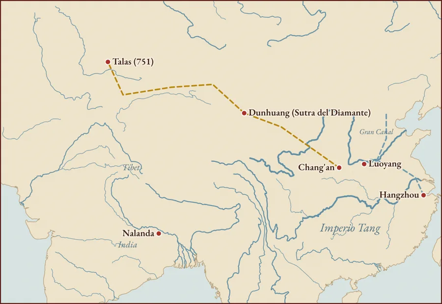
El país roto y el gran canal
Tras la caída de los Han, China vivió casi cuatro siglos dividida en reinos rivales. En el norte se instalaron pueblos llegados de la estepa, que acabaron adoptando la lengua y las costumbres chinas; en el sur, las antiguas familias nobles huidas del norte mantuvieron sus cortes refinadas. En medio de las guerras, el budismo, llegado de la India por la Ruta de la Seda, se extendió por todo el país, con miles de monasterios y enormes estatuas excavadas en la roca.
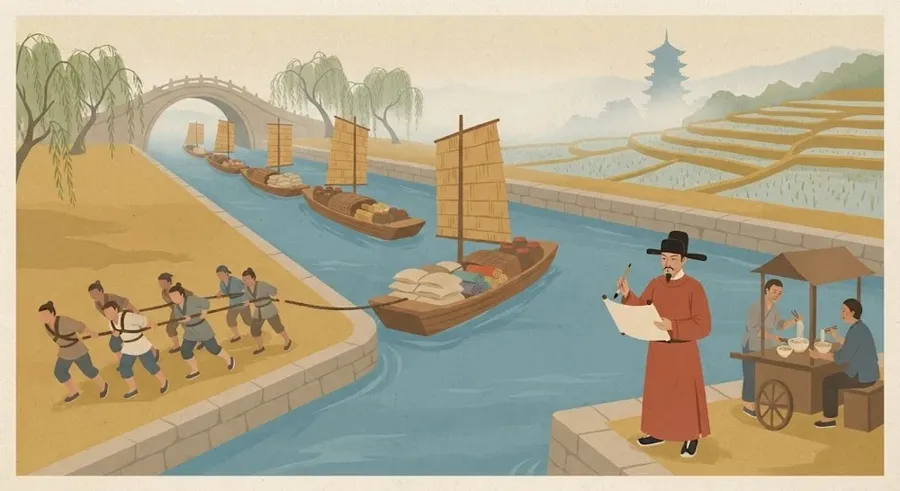
En el año 589, la dinastía Sui volvió a unir el norte y el sur. Duró muy poco, pero dejó una obra gigantesca: el Gran Canal, una vía de agua de más de mil quinientos kilómetros que unía el río Amarillo con el Yangtsé. Por él subía el arroz del sur, más rico, hacia las capitales del norte. Cientos de miles de campesinos trabajaron en él, muchos murieron, y el agotamiento del país provocó rebeliones que acabaron con los Sui.
Los Tang
En el 618, un general llamado Li Yuan fundó la dinastía Tang, que gobernaría casi tres siglos, hasta el 907. Su hijo Li Shimin fue el verdadero motor de la dinastía. En el año 626 tendió una emboscada a dos de sus hermanos junto a la puerta Xuanwu del palacio y los mató; poco después su padre le cedió el trono. Aquel comienzo sangriento dio paso a uno de los reinados más admirados de la historia china: como emperador Taizong, Li Shimin escuchaba las críticas de sus consejeros, rebajó los impuestos y extendió el poder chino hasta Asia central.
Los Tang perfeccionaron los exámenes imperiales, las pruebas sobre los clásicos confucianos y la poesía que permitían entrar en la administración. Al principio favorecían a las familias nobles, pero poco a poco abrieron el camino a hijos de familias más modestas que pasaban años estudiando para aprobar.
Chang'an, la capital del mundo
La capital Tang, Chang'an, era una inmensa cuadrícula de unos 84 kilómetros cuadrados, rodeada de murallas, con avenidas de más de cien metros de ancho y barrios cerrados que se abrían al amanecer y se cerraban de noche al toque de tambor. Pudo tener cerca de un millón de habitantes, más que ninguna otra ciudad del mundo en su tiempo.
Tenía dos grandes mercados, el del este y el del oeste. En el del oeste vivían y comerciaban extranjeros de toda Asia: sogdianos de Samarcanda, grandes mercaderes de la Ruta de la Seda; persas, algunos huidos tras la conquista árabe de su país; árabes, judíos, cristianos de la Iglesia de Oriente, turcos, coreanos y japoneses. Había templos budistas, santuarios del fuego zoroastrianos e iglesias. La moda de la corte imitaba lo extranjero: las damas se vestían a la persa, bebían vino de uva en copas de cristal y jugaban al polo a caballo. Japón y Corea copiaron la ciudad para construir sus propias capitales.
El viaje de Xuanzang
En el año 629, un monje budista llamado Xuanzang salió de Chang'an sin permiso del emperador, que había prohibido viajar al extranjero. Quería ir a la India, la tierra de Buda, a buscar los textos originales de su religión. Cruzó el desierto de Gobi, donde estuvo a punto de morir de sed, atravesó las montañas de Asia central y estudió durante años en la gran universidad budista de Nalanda.
Volvió en el 645, dieciséis años después, con más de seiscientos textos sagrados, y esta vez el emperador lo recibió como a un héroe. Pasó el resto de su vida traduciéndolos al chino. Su viaje inspiró siglos más tarde una de las grandes novelas chinas, Viaje al Oeste, en la que el monje va acompañado de un rey mono con poderes mágicos.
Wu Zetian, la única emperatriz
Wu Zhao entró en el palacio del emperador Taizong hacia los catorce años, como una concubina de rango menor. A su muerte la enviaron a un monasterio budista, como era costumbre, pero el nuevo emperador, Gaozong, la hizo volver a la corte. En el 655 ya era emperatriz. Cuando Gaozong quedó enfermo, ella gobernó en su nombre, y tras su muerte siguió gobernando a través de sus hijos.
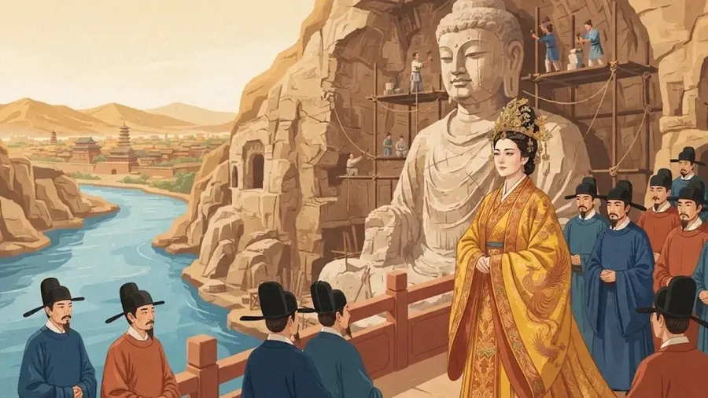
En el año 690 dio un paso que nadie había dado: se proclamó emperador en persona y fundó su propia dinastía. Es la única mujer de la historia de China que reinó con ese título. Amplió los exámenes imperiales a gente de origen más modesto, protegió el budismo y mandó esculpir en las cuevas de Longmen una gigantesca estatua de Buda. En el 705, ya anciana, un golpe de palacio la obligó a abdicar, y murió ese mismo año.
Los historiadores confucianos de siglos posteriores la retrataron como una mujer ambiciosa y cruel, y le atribuyeron crímenes horribles. Hoy se sabe que muchas de esas acusaciones aparecieron siglos después de su muerte, y los especialistas siguen discutiendo cómo fue de verdad.
Poetas
La época Tang es la edad de oro de la poesía china. Se conservan casi cincuenta mil poemas de más de dos mil autores. Los dos más grandes fueron amigos. Li Bai era un vagabundo genial, amante del vino y de la luna, y una leyenda cuenta que se ahogó al intentar abrazar el reflejo de la luna en un río. Du Fu, más serio, escribió sobre la guerra, el hambre y el sufrimiento de la gente sencilla. Muchos niños chinos aprenden todavía de memoria un poema de Li Bai que dice, más o menos: «Ante mi cama, la luz de la luna; parece escarcha en el suelo. Alzo la cabeza y miro la luna; bajo la cabeza y pienso en mi tierra».
La rebelión de An Lushan
El emperador Xuanzong reinó más de cuarenta años, del 712 al 756, y su corte fue la más brillante de la dinastía. Pero en su vejez se enamoró de Yang Guifei, una de las mujeres más célebres de la historia china, descuidó el gobierno y dejó el poder en manos de los parientes de ella. Se cuenta que hacía traer lichis frescos para ella desde el sur con correos a caballo.
Mientras tanto, el ejército de las fronteras había quedado en manos de generales profesionales. El más poderoso era An Lushan, hijo de un sogdiano y de una turca, favorito de la corte. En el 755 se rebeló. Sus tropas tomaron Chang'an, el emperador huyó y sus propios soldados le exigieron la muerte de Yang Guifei, a la que culpaban del desastre. La guerra duró ocho años y arrasó el norte de China. Los censos posteriores registraron muchos millones de habitantes menos, aunque parte de la caída se debe a que el Estado ya no conseguía contar a toda la población.
Pocos años antes, en el 751, un ejército Tang había sido derrotado por los árabes junto al río Talas, en Asia central. Se cuenta que entre los prisioneros había fabricantes de papel, y que gracias a ellos el secreto llegó a Samarcanda y al mundo islámico. Puede que sea una leyenda, pero la expansión china hacia el oeste terminó allí.
El libro más antiguo
En el año 1900, un monje taoísta que cuidaba las cuevas budistas de Dunhuang, en el extremo oeste de China, descubrió detrás de una pared una cueva sellada llena de manuscritos: decenas de miles de documentos escondidos hacia el año mil. Entre ellos había un rollo de unos cinco metros con el texto de un libro budista, el Sutra del Diamante, impreso con planchas de madera grabadas. Al final lleva una fecha que corresponde al año 868. Es el libro impreso y fechado más antiguo que se conoce, y hoy se guarda en la Biblioteca Británica de Londres.
El final
Tras la rebelión de An Lushan, los Tang nunca recuperaron su fuerza. Los generales de provincia gobernaban como reyes, los eunucos dominaban la corte y los impuestos aplastaban a los campesinos. Entre el 874 y el 884, un vendedor de sal de contrabando que había suspendido los exámenes imperiales, Huang Chao, encabezó una rebelión que llegó a tomar Chang'an. La ciudad fue saqueada y nunca volvió a ser capital de China. En el 907, un general depuso al último emperador Tang, y China volvió a romperse en pedazos durante medio siglo.
Línea de tiempo
Imprenta, pólvora y brújula
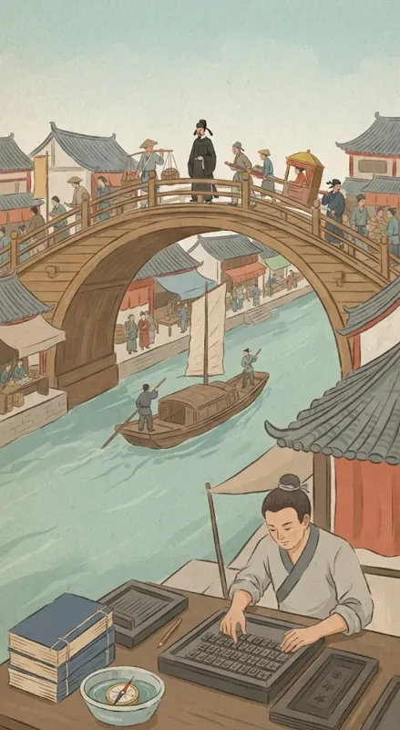
Mientras Europa vivía en castillos y aldeas, China tenía ciudades de un millón de habitantes, billetes de papel, libros impresos, barcos con brújula y armas de pólvora. La dinastía Song no fue la más fuerte militarmente, pero sí, probablemente, la sociedad más avanzada del mundo en su tiempo.
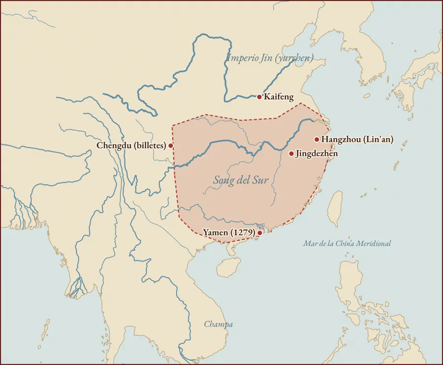
Un general que no quería generales
Tras la caída de los Tang, China pasó medio siglo dividida. En el año 960, un general de la guardia, Zhao Kuangyin, fue proclamado emperador por sus propios soldados, que según la tradición le echaron por los hombros una túnica amarilla, el color imperial, mientras él dormía la borrachera. Fundó la dinastía Song, que gobernaría hasta 1279.
Sabía muy bien cómo había llegado al trono, y no quería que otro general hiciera lo mismo. Cuenta una historia que invitó a sus principales comandantes a un banquete, les habló de lo difícil que era dormir tranquilo siendo emperador y les ofreció tierras, riquezas y una buena jubilación a cambio de sus ejércitos. Todos aceptaron. Desde entonces, en China, los militares quedaron por debajo de los funcionarios civiles, los letrados que aprobaban los exámenes imperiales.
La ciudad junto al río
La capital de los Song estaba en Kaifeng, junto al Gran Canal. Ya no era una ciudad cerrada por barrios con toque de queda, como la Chang'an de los Tang: las tiendas abrían a la calle, los mercados funcionaban de día y de noche, y había restaurantes, casas de té, teatros, puestos de comida y espectáculos de acróbatas y cuentacuentos.
Un pintor llamado Zhang Zeduan la retrató en un rollo de más de cinco metros, A lo largo del río durante la fiesta de Qingming. En él aparecen más de ochocientas personas: barqueros, porteadores, vendedores, monjes, mendigos, viajeros a camello, una multitud que se asoma a un puente mientras un barco está a punto de chocar contra él. Es como una fotografía de la vida en una ciudad china hace novecientos años.
China tenía entonces probablemente unos cien millones de habitantes, más que toda Europa junta. Desde el año 1011, el emperador hizo traer de Champa, en el actual Vietnam, una variedad de arroz que resistía la sequía y crecía tan rápido que permitía dos cosechas al año. Con más comida hubo más gente, y con más gente, más ciudades.
Billetes de papel
Con tanto comercio, las monedas de cobre se convirtieron en un problema: para pagar algo caro hacía falta cargar con sartas de miles de monedas que pesaban como un saco. En la provincia de Sichuan, los comerciantes empezaron a dejar sus monedas en casas de depósito a cambio de un recibo de papel que se podía usar para pagar. A principios del siglo XI, el gobierno Song tomó el control de aquellos recibos y empezó a emitirlos él mismo: fueron los primeros billetes oficiales del mundo, los jiaozi.
Al principio funcionó muy bien. Pero imprimir dinero era tan fácil que, cuando el Estado necesitaba pagar sus guerras, imprimía más, y los billetes perdían valor. China descubrió también la inflación.
Tres inventos que cambiaron el mundo
Cuatro siglos antes de Gutenberg, un artesano llamado Bi Sheng, que vivió entre el 990 y el 1051, inventó la imprenta de tipos móviles. Fabricaba cada carácter en un pequeño bloque de arcilla cocida, los colocaba en un marco de hierro sobre una capa de cera y resina, imprimía y luego los separaba para usarlos otra vez. Lo sabemos porque lo contó el sabio Shen Kuo en un libro de 1088. Sin embargo, con miles de caracteres distintos, la escritura china se adaptaba mal a los tipos móviles, y durante siglos los impresores siguieron prefiriendo grabar páginas enteras en planchas de madera. Aun así, se imprimían libros por millones: clásicos, manuales de medicina, almanaques, colecciones de poesía.
El mismo Shen Kuo describió en ese libro una aguja magnetizada que apuntaba al sur. Los chinos llevaban siglos usando piedras imanes para adivinar el futuro y orientar las casas, pero a comienzos del siglo XII un escritor menciona ya a marinos que usaban la brújula para orientarse cuando el cielo estaba nublado. Gracias a ella, los barcos chinos llegaron hasta la India y el golfo Pérsico.
La pólvora la habían descubierto, según parece, los alquimistas taoístas que buscaban el elixir de la inmortalidad, al mezclar salitre, azufre y carbón. Lo que encontraron fue lo contrario. En el año 1044, un manual militar Song recogió las primeras recetas escritas de pólvora del mundo, para fabricar bombas incendiarias y humos tóxicos. Más tarde llegaron las lanzas de fuego, unos tubos de bambú llenos de pólvora que lanzaban llamas y metralla, antepasados de los cañones.
El poder de los letrados
En la China Song, el gran ideal era aprobar los exámenes imperiales. Miles de jóvenes pasaban su juventud memorizando los clásicos confucianos, y las familias ahorraban durante años para pagar sus estudios. Los exámenes se hacían encerrados en celdas individuales durante días, y los textos se copiaban antes de entregarlos a los correctores para que nadie pudiera reconocer la letra de un candidato recomendado. Muy pocos aprobaban la prueba final en la capital, pero quien lo hacía cambiaba el destino de toda su familia.
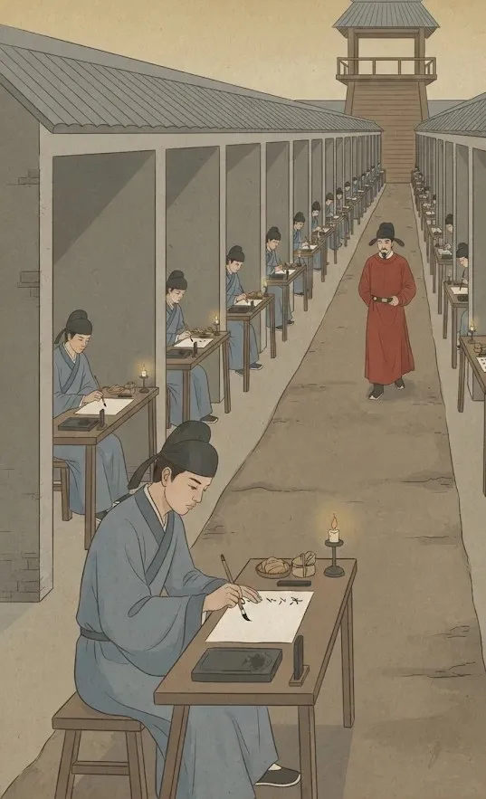
Un filósofo llamado Zhu Xi renovó el pensamiento de Confucio con ideas tomadas del budismo y del taoísmo. Su interpretación se convirtió en la base de los exámenes hasta el siglo XX.
La vida de las mujeres, en cambio, se hizo más estrecha. Fue en esta época cuando empezó a extenderse entre las familias acomodadas la costumbre de vendar los pies a las niñas para que no crecieran, un símbolo de elegancia que causaba dolores terribles de por vida. Se mantuvo casi mil años y no desapareció del todo hasta el siglo XX.
Los Song del sur
El punto débil de los Song era el ejército. En el norte había surgido un poderoso pueblo de la estepa, los yurchen, que fundaron el imperio Jin. En 1127, los yurchen tomaron Kaifeng y se llevaron prisioneros a dos emperadores y a casi toda la corte. Un príncipe que había escapado reorganizó la dinastía en el sur, con su capital en Hangzhou, una ciudad de canales y jardines junto a un lago.
El general Yue Fei estuvo a punto de reconquistar el norte, pero la corte prefirió firmar la paz, y en 1142 lo hizo ejecutar acusado de traición. Hoy es uno de los grandes héroes nacionales de China. Su madre, cuenta la leyenda, le había tatuado en la espalda cuatro caracteres: «servir al país con lealtad absoluta».
Los Song del Sur vivieron un siglo y medio de prosperidad. Hangzhou fue quizá la ciudad más grande y rica del mundo, con fábricas de porcelana, astilleros y un comercio marítimo que llegaba hasta África oriental. Pero en el norte se estaba formando una tormenta que nadie podría detener: los mongoles. En 1279, en la batalla naval de Yamen, cerca de la actual Hong Kong, cayó la última flota Song. Para no caer prisionero, un alto ministro saltó al mar con el último emperador, un niño de siete años, en brazos.
Línea de tiempo
Bajo los mongoles
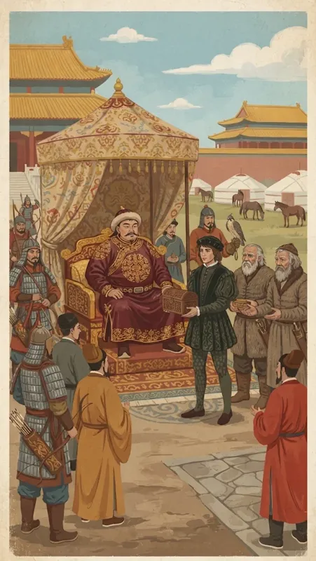
Por primera vez, toda China cayó en manos de un pueblo extranjero. Los nietos de Gengis Kan gobernaron desde Pekín un imperio que llegaba hasta Rusia y Persia, y por sus caminos viajaron mercaderes, monjes y un joven veneciano que contaría a Europa maravillas que nadie quiso creer.
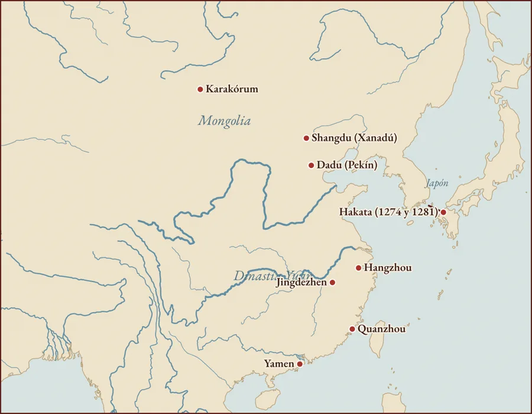
Los jinetes de la estepa
En 1206, en las praderas de Mongolia, las tribus nómadas eligieron como gran kan a un jefe llamado Temuyín, que tomó el nombre de Gengis Kan. Unió a los mongoles en un ejército de jinetes arqueros, organizados en unidades de diez, cien, mil y diez mil hombres, capaces de recorrer distancias enormes a una velocidad que ningún ejército sedentario podía igualar. Cada guerrero llevaba varios caballos de repuesto y podía vivir semanas de la leche y la sangre de sus animales.
En 1215, los mongoles tomaron y saquearon Zhongdu, la capital del imperio Jin de los yurchen, en el lugar de la actual Pekín. Gengis Kan murió en 1227, pero sus hijos y nietos siguieron conquistando. En 1234 destruyeron por completo a los Jin. Al mismo tiempo, otros ejércitos mongoles llegaban a Persia, a Rusia, a Hungría y a Polonia. Fue el imperio terrestre continuo más grande de la historia.
Kublai Kan
El más famoso de los nietos de Gengis Kan fue Kublai, que se hizo con el poder en el este en 1260. A diferencia de su abuelo, Kublai había crecido rodeado de consejeros chinos y entendía que para gobernar China había que hacerlo, en parte, a la manera china. En 1271 dio a su dinastía un nombre chino: Yuan, que significa «el origen». Construyó una nueva capital, Dadu, «la gran capital», en el lugar de la actual Pekín, con murallas, palacios y avenidas trazadas en cuadrícula. En verano se retiraba a su residencia de Shangdu, en la estepa, a la que los europeos llamarían Xanadú.
Conquistar el sur, el rico imperio de los Song, le costó casi veinte años de guerra y largos asedios de ciudades fortificadas, para los que los mongoles tuvieron que aprender a usar barcos y máquinas de asedio. En 1279, con la batalla de Yamen, toda China quedó bajo su poder.
Kublai quiso ir aún más allá. En 1274 y en 1281 envió dos grandes flotas a invadir Japón. Las dos fracasaron, y la segunda fue destruida por un tifón que los japoneses llamaron kamikaze, «el viento divino».
Cuatro clases de personas
Los mongoles eran muy pocos comparados con los chinos, y no se fiaban de ellos. Dividieron a la población en cuatro categorías. Arriba estaban los mongoles. Después, los semu, gentes de Asia central y de Occidente, turcos, persas o árabes, que servían a los mongoles como funcionarios, recaudadores de impuestos y comerciantes. Por debajo, los chinos del norte, sometidos antes. Y al final, los del sur, los últimos en rendirse.
Los exámenes imperiales, el gran orgullo de los letrados chinos, se suspendieron durante décadas y no se restablecieron hasta 1315, y aun entonces con ventaja para los mongoles. Muchos letrados que se quedaron sin carrera se dedicaron a la pintura, a la poesía y al teatro. De esta época son algunas de las mejores obras del teatro chino.
Un mundo conectado
Bajo los mongoles, por primera vez, un viajero podía cruzar Asia de punta a punta dentro de un mismo imperio. Una red de casas de postas, con caballos de refresco, permitía a los mensajeros recorrer cientos de kilómetros al día. Los comerciantes llevaban un salvoconducto, una placa de metal con el sello del kan, que les abría todos los caminos. Kublai amplió el Gran Canal hasta su capital para asegurar la llegada del arroz del sur y extendió el uso del papel moneda a todo el imperio.
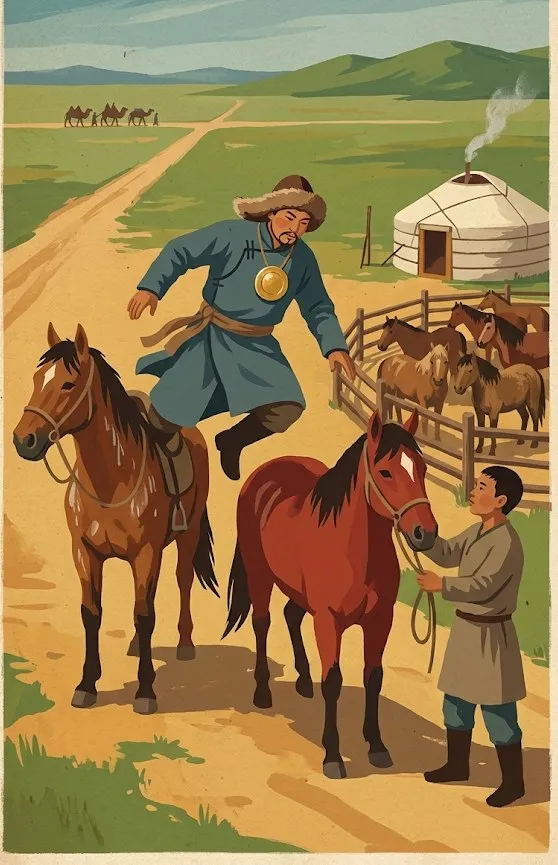
Por esos caminos viajaron personas, ideas y mercancías en las dos direcciones. Al oeste llegaron la pólvora, la brújula y la imprenta. Al este llegaron astrónomos y médicos persas, y el cobalto con el que los alfareros de Jingdezhen empezaron a pintar la célebre porcelana azul y blanca, que se vendería en todo el mundo durante siglos.
Un monje cristiano nacido cerca de Pekín, Rabban Sauma, hizo el viaje al revés: entre 1287 y 1288 llegó como embajador hasta Roma y París, donde fue recibido por el papa y por el rey de Francia. Fue el primer chino del que sabemos que pisó Europa.
El veneciano
En 1271, el mismo año en que Kublai fundó la dinastía Yuan, salieron de Venecia dos mercaderes, Niccolò y Maffeo Polo, con el hijo de Niccolò, un muchacho de diecisiete años llamado Marco. Tardaron unos tres años y medio en llegar a la corte de Kublai. Según su relato, el joven Marco aprendió lenguas, se ganó la confianza del kan y recorrió el imperio como su enviado durante unos diecisiete años.
Volvieron a Venecia en 1295. Poco después, Marco cayó prisionero de los genoveses, enemigos de Venecia, y en la cárcel dictó sus recuerdos a un compañero de celda, un escritor de novelas de caballerías llamado Rustichello de Pisa. El libro, conocido como Il Milione o El libro de las maravillas, contaba cosas increíbles para un europeo: ciudades inmensas, «piedras negras que arden» como la leña, que era el carbón, y un dinero hecho de papel que todo el mundo aceptaba.
Mucha gente pensó que exageraba, y algunos historiadores modernos han dudado de que llegara a China, porque no menciona la Gran Muralla, el té ni la escritura china. Pero la muralla que hoy conocemos se construyó después, y muchos detalles de su libro sobre la moneda o la sal coinciden con los documentos chinos. La mayoría de los historiadores creen hoy que sí estuvo allí, aunque exagerara su importancia. Dos siglos después, un navegante genovés leyó su libro con atención y anotó sus márgenes antes de buscar una ruta a Asia por el oeste: se llamaba Cristóbal Colón.
El fin de los Yuan
Los sucesores de Kublai fueron más débiles, y se pelearon entre ellos por el trono. El papel moneda, impreso sin control, perdió su valor. A mediados del siglo XIV llegaron las catástrofes: sequías, hambres, epidemias y, en 1344, una gran crecida del río Amarillo que cambió de cauce y arrasó comarcas enteras. Para muchos chinos era la señal: los mongoles habían perdido el Mandato del Cielo.
En 1351 estalló la rebelión de los Turbantes Rojos, alentada por sectas que anunciaban la llegada de un buda salvador. Entre sus jefes había un campesino pobre que había perdido a toda su familia por el hambre y la peste, había sido monje budista y había mendigado por los caminos: Zhu Yuanzhang. Poco a poco se impuso a los demás jefes rebeldes, y en 1368 sus tropas entraron en Dadu. El último emperador mongol huyó a la estepa. Zhu Yuanzhang fundó una nueva dinastía, y la llamó Ming, «brillante».
Línea de tiempo
Las flotas del tesoro
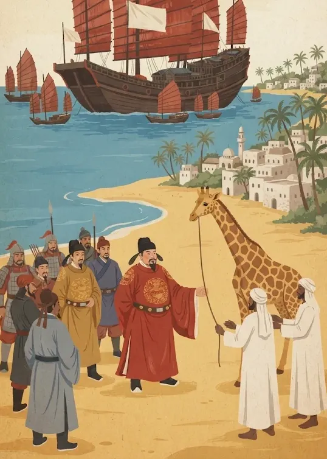
Un mendigo convertido en emperador expulsó a los mongoles y fundó la dinastía Ming. Su hijo construyó en Pekín la Ciudad Prohibida y envió por el océano Índico las flotas más grandes que el mundo había visto, mandadas por un almirante eunuco y musulmán. Luego China cerró sus puertos, levantó la Gran Muralla de piedra y miró hacia dentro.
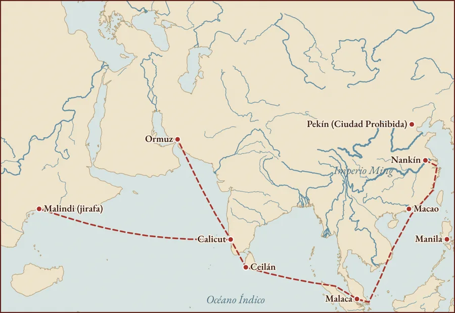
El emperador mendigo
Zhu Yuanzhang, el campesino que había echado a los mongoles, reinó treinta años con el nombre de emperador Hongwu (1368-1398). Estableció su capital en Nankín, en el sur. Conocía la miseria del campo y quiso proteger a los campesinos: repartió tierras, rebajó impuestos y mandó hacer registros detallados de las familias y de las parcelas de todo el país.
Pero también era desconfiado hasta la paranoia. Abolió el cargo de primer ministro para gobernarlo todo él mismo, creó una policía secreta y en varias purgas mandó ejecutar a decenas de miles de funcionarios, generales y familiares suyos, acusados de conspirar. En su corte, un ministro podía ser azotado hasta la muerte delante de todos por una frase mal elegida.
Yongle y la Ciudad Prohibida
A su muerte heredó el trono un nieto, pero uno de sus hijos, el príncipe de Yan, que gobernaba la frontera norte desde Pekín, se rebeló, tomó Nankín en 1402 y se proclamó emperador. Reinó con el nombre de Yongle hasta 1424 y fue uno de los soberanos más ambiciosos de la historia china.
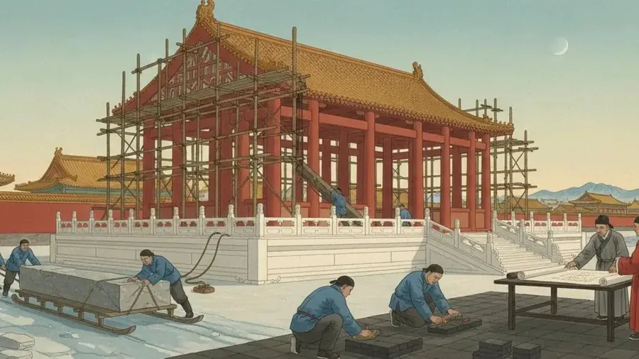
Yongle trasladó la capital a su base del norte, Pekín, «la capital del norte», cerca de la frontera con los mongoles. Allí mandó construir, entre 1406 y 1420, un inmenso palacio rodeado de murallas rojas y un foso: la Ciudad Prohibida, llamada así porque nadie podía entrar sin permiso del emperador. Ocupa 72 hectáreas y tiene unos 980 edificios. Según la tradición, trabajaron en ella más de un millón de personas, y se trajeron troncos de los bosques del sur y enormes bloques de mármol arrastrados en invierno sobre caminos de hielo. Durante casi cinco siglos fue la residencia de veinticuatro emperadores. Hoy es el Museo del Palacio, uno de los más visitados del mundo.
Yongle encargó también una enciclopedia que reuniera todo el saber chino. Más de dos mil letrados trabajaron en ella entre 1403 y 1408. Ocupaba más de once mil volúmenes. Era tan grande que nunca se imprimió, y de los manuscritos solo se conservan unos pocos cientos de tomos.
El almirante eunuco
En el sur de China, en Yunnan, había nacido hacia 1371 un niño de familia musulmana llamado Ma He. Cuando las tropas Ming conquistaron la región, fue hecho prisionero y castrado, como se hacía con muchos niños cautivos, y entró al servicio del príncipe que luego sería el emperador Yongle. Se convirtió en uno de sus hombres de confianza, y el emperador le dio un nuevo apellido: Zheng He.
En 1405, Yongle lo puso al frente de una flota de 317 barcos y casi 28.000 hombres para recorrer los mares del sur y del oeste. Era la flota más grande que el mundo había visto. Las crónicas hablan de enormes «barcos del tesoro» de nueve mástiles, aunque muchos historiadores creen hoy que esas medidas están exageradas. Aun así, eran mucho mayores que las carabelas con las que Colón cruzaría el Atlántico ochenta años después.
Entre 1405 y 1433, Zheng He hizo siete grandes viajes. Visitó el sudeste asiático, la India, Ceilán, Arabia y la costa oriental de África. No buscaba conquistar tierras, sino mostrar el poder del emperador, cobrar tributos, traer embajadores y comerciar. Volvía cargado de especias, maderas preciosas, piedras y animales exóticos. Desde Malindi, en la actual Kenia, trajo una jirafa, que la corte tomó por un qilin, un animal mítico que solo aparecía cuando reinaba un soberano perfecto.
El final de los viajes
Tras la muerte de Yongle, en 1424, los viajes se detuvieron casi por completo. Hubo una última expedición en 1431-1433, durante la cual Zheng He probablemente murió. Después, nunca más.
¿Por qué? Los viajes costaban una fortuna y no daban beneficios, y los funcionarios confucianos los veían como un capricho de los eunucos de la corte, sus grandes rivales. Además, el peligro real estaba en el norte, en la frontera con los mongoles, y el dinero hacía falta allí. Más tarde, los Ming llegaron a prohibir a sus súbditos el comercio privado por mar, aunque los contrabandistas y los piratas nunca dejaron de hacerlo. China, que habría podido llegar a Europa por mar antes que los europeos a China, renunció al océano justo cuando portugueses y españoles se lanzaban a él.
La Gran Muralla de piedra
En 1449, el emperador Zhengtong, aconsejado por un eunuco sin experiencia militar, salió a combatir a los mongoles con un gran ejército y fue derrotado y hecho prisionero en Tumu. El desastre convenció a los Ming de que había que cerrar el norte para siempre.
En los dos siglos siguientes reconstruyeron y alargaron las antiguas murallas de tierra, esta vez con piedra y ladrillo, torres de vigía cada pocos cientos de metros y fortalezas en los pasos de montaña. Es la Gran Muralla que conocemos hoy, la de Badaling o Mutianyu, con sus almenas serpenteando por las crestas. Se suele decir que se ve desde la Luna, pero no es verdad: es muy larga, pero demasiado estrecha.
Los bárbaros del mar
Mientras China se encerraba, llegaron por el mar unos extranjeros nuevos. Los portugueses alcanzaron las costas del sur hacia 1513, y en 1557 se les permitió instalarse en Macao. En 1571, los españoles fundaron Manila, en Filipinas, y empezaron a cambiar con los mercaderes chinos la plata de América por seda y porcelana. Era el comienzo del galeón de Manila, del que hablaremos en el capítulo siguiente.
Con los barcos europeos llegaron también los misioneros. El jesuita italiano Matteo Ricci aprendió chino, se vistió como un letrado confuciano y en 1601 consiguió instalarse en Pekín. Asombró a los sabios chinos con relojes mecánicos, un mapa del mundo en chino y sus conocimientos de matemáticas y astronomía, y les explicó el cristianismo usando las palabras de Confucio.
La caída de los Ming
A comienzos del siglo XVII, todo salió mal a la vez. Los emperadores se desentendían del gobierno, los eunucos y las facciones de la corte se peleaban, y el Estado no tenía dinero para pagar a sus soldados. Llegaron años de frío, sequías, plagas de langosta y epidemias. Las rebeliones campesinas se extendieron por el norte.
En abril de 1644, el ejército de un jefe rebelde, Li Zicheng, entró en Pekín. El último emperador Ming, Chongzhen, subió a la colina que hay detrás de la Ciudad Prohibida y se ahorcó en un árbol. Pero Li Zicheng no duró ni seis semanas en el trono. En la frontera noreste, el general Ming Wu Sangui, que guardaba el paso de Shanhaiguan, donde la Gran Muralla llega al mar, decidió abrir las puertas a los vecinos del otro lado para que le ayudaran a expulsar a los rebeldes. Eran los manchúes. Entraron, derrotaron a Li Zicheng y ya no se marcharon.
Línea de tiempo
Té, plata y opio
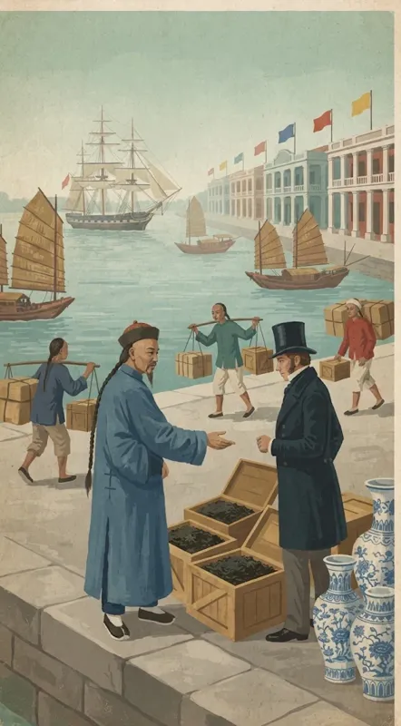
Los manchúes, un pueblo del noreste, gobernaron China durante casi tres siglos y la hicieron más grande y más poblada que nunca. Durante mucho tiempo, el mundo entero pagó en plata por su té, su seda y su porcelana, buena parte de ella plata española llegada de América. Hasta que los británicos encontraron algo que vender a los chinos: el opio.
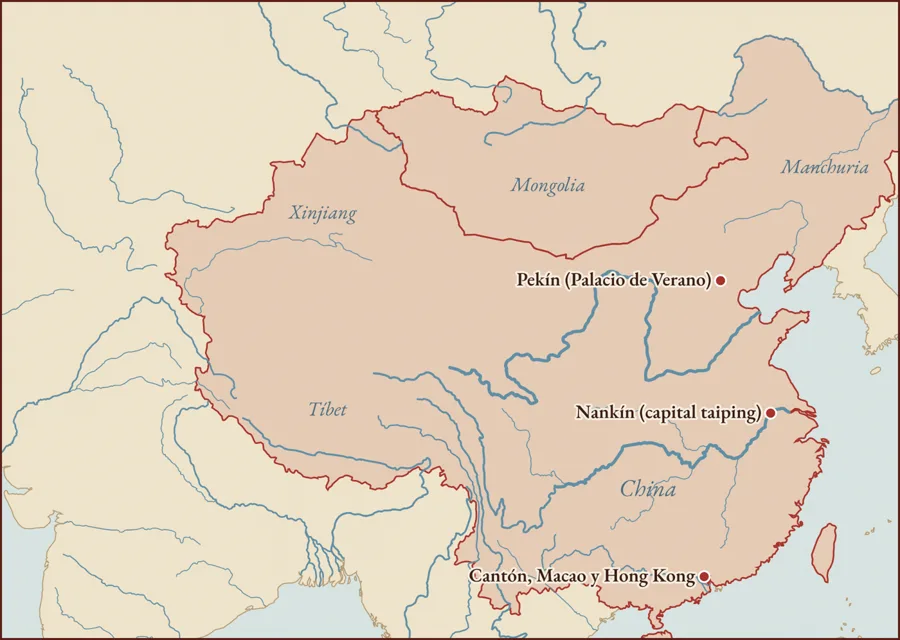
La coleta de los manchúes
Los manchúes eran descendientes de los yurchen que siglos antes habían expulsado a los Song del norte. A comienzos del siglo XVII, un jefe llamado Nurhaci unió sus tribus y organizó a todo su pueblo en grandes unidades militares llamadas «banderas». Su hijo dio a la dinastía un nombre chino: Qing, «pura». En 1644, aprovechando la caída de los Ming, entraron en Pekín, y en pocas décadas dominaron toda China.
Eran muy pocos, quizá uno por cada cien chinos, y para dejar claro quién mandaba impusieron una señal visible: en 1645 ordenaron a todos los hombres afeitarse la parte delantera de la cabeza y llevar el resto del pelo trenzado en una larga coleta, como los manchúes. Quien se negara sería ejecutado. Se decía: «conserva el pelo y pierdes la cabeza; conserva la cabeza y pierdes el pelo». La coleta, que al principio fue una humillación, acabó siendo para los extranjeros el símbolo de China.
Dos grandes emperadores
Los Qing tuvieron la suerte de contar con dos soberanos excepcionales que reinaron, entre los dos, más de ciento veinte años. Kangxi subió al trono en 1661 siendo un niño y reinó sesenta y un años. Era un hombre curioso, que estudiaba matemáticas y astronomía con los jesuitas de su corte, recorría el país y escribía poesía. Su nieto Qianlong reinó desde 1735 hasta 1796, cuando abdicó para no superar el reinado de su abuelo, aunque siguió mandando desde la sombra.
Bajo ellos, el imperio alcanzó su máxima extensión: incorporaron Taiwán, Mongolia, el Tíbet y las tierras de Asia central que llamaron Xinjiang, «la nueva frontera». China duplicó su territorio. Y su población creció como nunca: gracias a las nuevas cosechas llegadas de América, como el maíz, el boniato y el cacahuete, que crecían en tierras de montaña donde no se daba el arroz, pasó de unos 150 millones de habitantes hacia 1700 a unos 300 millones hacia 1800.
La plata de América
Desde 1565, cuando Urdaneta encontró la ruta de vuelta por el Pacífico, el galeón de Manila cruzaba cada año el océano entre Acapulco y Filipinas. Llevaba plata de las minas de México y del Perú, y volvía cargado de sedas, porcelanas, lacas y especias que los mercaderes chinos llevaban a Manila. Durante dos siglos y medio, hasta 1815, una parte enorme de la plata extraída en América terminó en China. La moneda de ocho reales, el «peso» español acuñado en México, circuló tanto por las costas chinas que los comerciantes la usaban como moneda corriente. Desde finales de los Ming, el gobierno chino exigía los impuestos en plata, así que el campesino de una aldea china dependía, sin saberlo, de las minas de Potosí y de Zacatecas.
El té y el sistema de Cantón
En Europa, la gran moda del siglo XVIII fue el té. En Gran Bretaña se convirtió en la bebida nacional, y todo venía de China, el único país que sabía cultivarlo y prepararlo a gran escala.
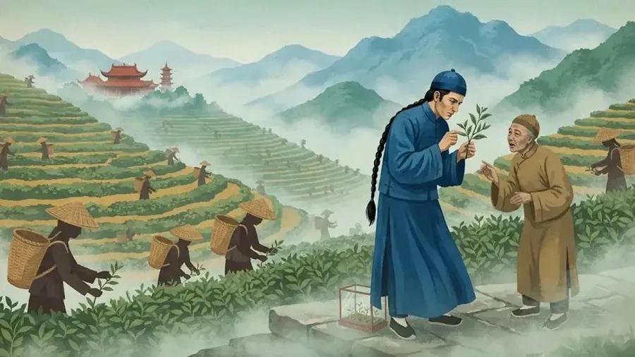
Pero los emperadores Qing no tenían ningún interés en los productos europeos. Desde 1757, solo permitieron comerciar a los extranjeros en un puerto, Cantón, a través de un pequeño grupo de mercaderes autorizados. Los europeos vivían en unos almacenes junto al río y no podían entrar en la ciudad. En 1793, el embajador británico lord Macartney llegó a la corte de Qianlong con regalos, telescopios y relojes, para pedir más puertos y una embajada permanente. El emperador le contestó con una carta que se haría famosa: China lo tenía todo y no necesitaba nada de su país. Macartney se fue con las manos vacías.
La solución del opio
El problema para los británicos era que el té se pagaba en plata, y la plata salía de Gran Bretaña sin parar. La Compañía Británica de las Indias Orientales encontró una mercancía que sí se vendía en China: el opio, una droga que se cultivaba en sus tierras de Bengala, en la India. Como el emperador había prohibido fumarlo e importarlo, lo vendían a comerciantes privados que lo introducían de contrabando en la costa china.
Las ventas se dispararon: de unas 4.000 cajas al año hacia 1800 a cerca de 40.000 a finales de la década de 1830. Millones de personas se hicieron adictas, y ahora era la plata la que salía de China. En 1839, el emperador envió a Cantón a un funcionario honrado e inflexible, Lin Zexu, para acabar con el tráfico. Lin escribió a la reina Victoria preguntándole cómo podía permitir en China lo que estaba prohibido en su propio país, cercó los almacenes extranjeros y confiscó más de 20.000 cajas de opio, que hizo destruir mezclándolas con cal y sal y vertiéndolas al mar.
La guerra del opio
Gran Bretaña respondió con la guerra. En la Primera Guerra del Opio (1839-1842), los barcos de vapor y los cañones británicos destrozaron con facilidad los juncos y los fuertes chinos. Algunos británicos, como el joven político Gladstone, la llamaron una guerra vergonzosa. Por el tratado de Nankín (1842), China tuvo que ceder Hong Kong, abrir cinco puertos al comercio y pagar una enorme indemnización. Fue el primero de los que los chinos llaman los «tratados desiguales».
Pocos años después, en la Segunda Guerra del Opio, las tropas británicas y francesas llegaron hasta Pekín y en 1860 saquearon y quemaron el Palacio de Verano, un inmenso conjunto de jardines y pabellones de los emperadores. Para muchos chinos fue una humillación que nunca olvidarían. Empezaba lo que en China se llama el «siglo de la humillación».
El hermano menor de Jesucristo
Mientras tanto, el imperio se desangraba por dentro. Un aspirante a funcionario que había suspendido varias veces los exámenes imperiales, Hong Xiuquan, leyó unos folletos de misioneros protestantes y, tras una grave enfermedad, se convenció de que era el hermano menor de Jesucristo, enviado para limpiar China de demonios. Fundó el Reino Celestial de la Gran Paz, Taiping, que prometía repartir las tierras y prohibía el opio, el alcohol y el vendado de los pies.
La rebelión Taiping (1850-1864) conquistó buena parte del sur de China y estableció su capital en Nankín. Fue una de las guerras más mortíferas de la historia de la humanidad: se calcula que murieron entre 20 y 30 millones de personas, por los combates, el hambre y las epidemias.
Un imperio que se hunde
En la segunda mitad del siglo XIX, el poder real de la corte Qing estuvo en manos de una mujer, la emperatriz viuda Cixi, que gobernó durante casi cincuenta años en nombre de su hijo y de su sobrino. Algunos funcionarios intentaron modernizar el país con arsenales, astilleros y escuelas al estilo occidental, pero la corte frenaba las reformas.
En 1895, China fue derrotada por Japón, un país al que siempre había considerado un alumno menor, y tuvo que cederle Taiwán. Las potencias europeas se repartieron zonas de influencia como si China fuera un pastel. En 1900, una sociedad secreta de campesinos que practicaban artes marciales, los bóxers, se lanzó contra los extranjeros y los cristianos, y la corte los apoyó. Un ejército de ocho potencias extranjeras entró en Pekín. El Mandato del Cielo de los Qing se estaba acabando.
Línea de tiempo
El siglo de las revoluciones
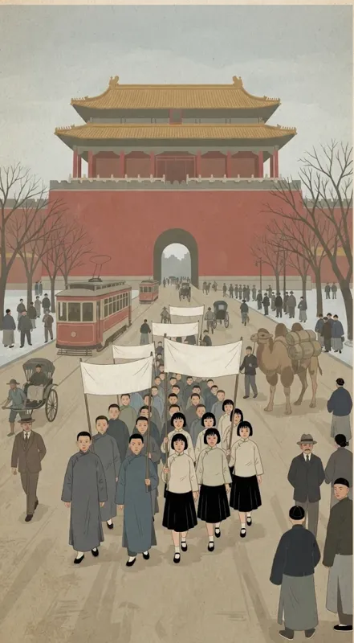
En 1912, el último emperador, un niño de seis años, renunció al trono, y después de más de dos mil años China dejó de ser un imperio. Siguieron cuatro décadas de caos: señores de la guerra, invasión japonesa y guerra civil. En 1949 llegaron al poder los comunistas de Mao Zedong, que quisieron rehacer el país de arriba abajo, con un coste humano enorme.
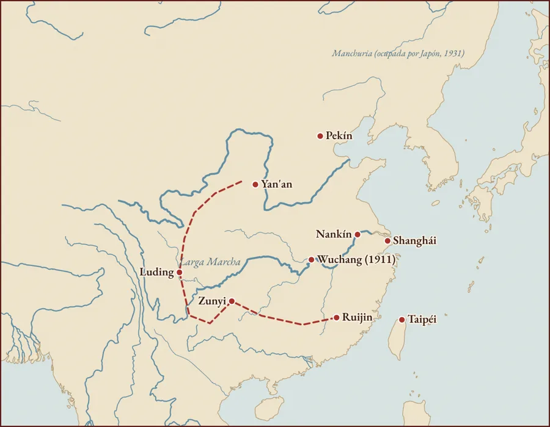
La caída del último emperador
A comienzos del siglo XX, muchos chinos jóvenes, sobre todo los que habían estudiado en Japón o en Occidente, estaban convencidos de que la dinastía Qing no podía salvar al país. El más conocido era Sun Yat-sen, un médico del sur que había vivido en Hawái y en Hong Kong y que recorría el mundo reuniendo dinero y partidarios para una revolución.
El 10 de octubre de 1911, una sublevación de soldados en la ciudad de Wuchang se extendió por todo el sur. En pocas semanas, la mayoría de las provincias se declararon independientes de la corte. El 12 de febrero de 1912, el último emperador, Puyi, de seis años, abdicó. Nacía la República de China. Puyi siguió viviendo un tiempo en la Ciudad Prohibida, y su vida, que terminaría como jardinero en el Pekín comunista, se contó en la película El último emperador.
Señores de la guerra y estudiantes
La república no trajo la paz. El general que había forzado la abdicación, Yuan Shikai, se hizo con la presidencia e incluso intentó proclamarse emperador. A su muerte, en 1916, el país se fragmentó entre señores de la guerra, generales que gobernaban provincias enteras con sus propios ejércitos y luchaban entre sí.
El 4 de mayo de 1919, miles de estudiantes se manifestaron en Pekín contra la decisión de las potencias, en la conferencia de paz tras la Primera Guerra Mundial, de entregar a Japón los antiguos territorios alemanes en China. Aquel Movimiento del 4 de Mayo fue mucho más que una protesta: los jóvenes pedían «ciencia y democracia», escribir en la lengua hablada y no en el chino clásico, y romper con las tradiciones confucianas que, según ellos, mantenían a China atrasada.
En ese ambiente nacieron dos grandes partidos. El Partido Nacionalista, el Guomindang, fundado por Sun Yat-sen, y el Partido Comunista de China, creado en 1921 en Shanghái por un pequeño grupo de intelectuales, entre ellos un joven bibliotecario de Hunan: Mao Zedong.
Nacionalistas contra comunistas
Al principio, los dos partidos colaboraron para acabar con los señores de la guerra. Tras la muerte de Sun Yat-sen, el jefe de los nacionalistas fue el general Chiang Kai-shek. En 1926 emprendió una gran campaña hacia el norte, y en 1927, en Shanghái, se volvió de repente contra sus aliados comunistas y mandó matar a miles de ellos. Empezaba una guerra civil que, con pausas, duraría más de veinte años.
Los comunistas supervivientes se refugiaron en el campo. Mao comprendió que en China la revolución no la harían los obreros de las fábricas, como en Rusia, sino los campesinos, que eran la inmensa mayoría.
La Larga Marcha
En octubre de 1934, rodeados por el ejército nacionalista en sus bases del sur, unos 86.000 combatientes comunistas rompieron el cerco y emprendieron una retirada que se haría legendaria: la Larga Marcha. Durante un año caminaron hacia el norte y el oeste, cruzando ríos, montañas nevadas y pantanos, perseguidos y bombardeados. La propaganda comunista habló después de 12.500 kilómetros; algunos investigadores calculan bastante menos. A su destino, en la provincia de Shaanxi, llegaron unos 8.000.
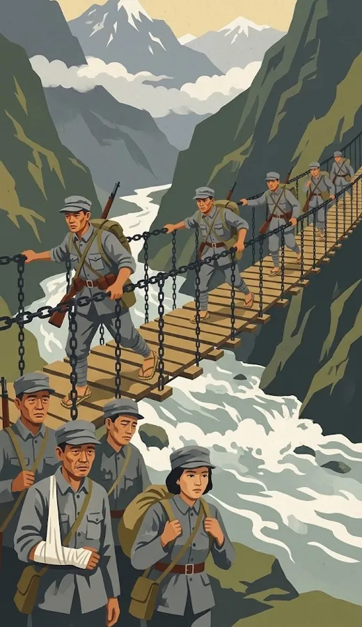
Durante la marcha, en una reunión en la ciudad de Zunyi, Mao empezó a imponerse como jefe del partido. La Larga Marcha fue un desastre militar, pero se convirtió en el gran mito fundador del comunismo chino.
La guerra contra Japón
Japón llevaba años aprovechando la debilidad china. En 1931 ocupó Manchuria, donde creó un Estado títere y puso al frente a Puyi, el antiguo emperador. En 1937 lanzó la invasión total de China. Tomó Pekín, Shanghái y la capital nacionalista, Nankín, donde sus tropas cometieron una de las peores matanzas del siglo: durante semanas asesinaron a decenas o cientos de miles de civiles y prisioneros, y violaron a decenas de miles de mujeres. Las cifras siguen siendo objeto de debate, pero no lo que ocurrió.
Nacionalistas y comunistas firmaron una tregua para combatir juntos a Japón, aunque nunca se fiaron unos de otros. La guerra se fundió con la Segunda Guerra Mundial y causó en China millones de muertos. Terminó con la rendición japonesa en 1945.
La República Popular
Nada más acabar la guerra contra Japón, nacionalistas y comunistas volvieron a enfrentarse. Los nacionalistas tenían más soldados y la ayuda de Estados Unidos, pero su gobierno estaba desprestigiado por la corrupción y por una inflación que hacía que el dinero no valiera nada. Los comunistas, en cambio, se habían ganado a muchos campesinos repartiendo tierras en las zonas que controlaban. En tres años, sus ejércitos conquistaron todo el país.
El 1 de octubre de 1949, desde la puerta de Tiananmén, Mao proclamó la República Popular China. Chiang Kai-shek se retiró con su gobierno y cientos de miles de soldados y civiles a la isla de Taiwán, donde la República de China ha seguido existiendo hasta hoy.
El Gran Salto Adelante
El nuevo régimen repartió las tierras de los terratenientes, muchos de los cuales fueron ejecutados, aprobó una ley que prohibía los matrimonios forzados y emprendió grandes campañas de alfabetización y de salud. Pero Mao quería ir más deprisa. En 1958 lanzó el Gran Salto Adelante, un plan para que China alcanzara en pocos años la producción industrial de Gran Bretaña.
Los campesinos fueron agrupados en enormes comunas populares, con cocinas comunes. Millones de personas abandonaron el campo para fundir hierro en pequeños hornos de patio, que producían un metal casi inservible. Los jefes locales, por miedo a ser castigados, inventaban cosechas récord, y el Estado se llevaba el grano que en realidad no sobraba. El resultado fue la mayor hambruna de la historia. Entre 1959 y 1961 murieron de hambre millones de personas: la mayoría de los especialistas calculan entre 15 y 40 millones, y la cifra más citada ronda los 30 millones.
La Revolución Cultural
Tras el desastre, otros dirigentes comunistas apartaron a Mao de la gestión diaria. En 1966, para recuperar el poder, Mao lanzó la Revolución Cultural. Llamó a los jóvenes a rebelarse contra los «elementos burgueses» del propio partido. Millones de estudiantes, organizados como Guardias Rojos, humillaron, golpearon y a veces mataron a profesores, funcionarios, intelectuales y vecinos, y destruyeron templos, libros y obras de arte en nombre de la lucha contra las «cuatro antigüedades»: las viejas ideas, cultura, costumbres y hábitos. Más tarde, más de diez millones de jóvenes de las ciudades fueron enviados a trabajar al campo.
El caos duró hasta la muerte de Mao, el 9 de septiembre de 1976. Se calcula que murieron entre cientos de miles y dos millones de personas. Un mes después fueron detenidos los cuatro dirigentes más radicales, la llamada «Banda de los Cuatro», entre ellos la viuda de Mao. En 1981, el propio Partido Comunista declaró que la Revolución Cultural había sido el peor retroceso sufrido por el país desde 1949.
Línea de tiempo
El regreso del dragón
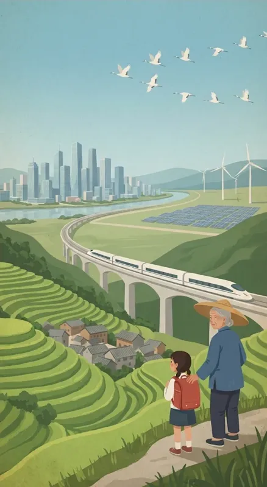
En 1978, China era uno de los países más pobres del mundo. Cuarenta años después era la segunda economía del planeta, fabricaba buena parte de lo que usamos y enviaba naves a la cara oculta de la Luna. Este último capítulo cuenta, con datos, cómo ocurrió ese cambio, el más rápido de la historia, y qué preguntas deja abiertas.
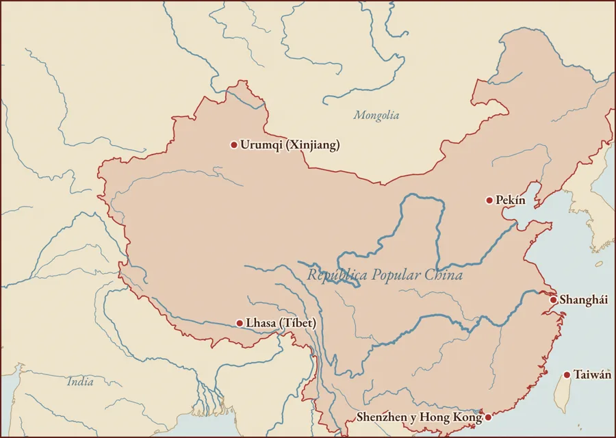
No importa el color del gato
Tras la muerte de Mao, el poder pasó a un dirigente veterano que había sido purgado dos veces: Deng Xiaoping, un hombre bajito y pragmático que había vivido de joven en Francia. Se le atribuye una frase que resume su manera de pensar: «No importa que el gato sea blanco o negro; lo importante es que cace ratones».
En diciembre de 1978, el Partido Comunista aprobó una política de reforma y apertura. Las comunas populares se disolvieron y los campesinos pudieron volver a cultivar sus parcelas y vender lo que les sobraba en el mercado. En pocos años, las cosechas se dispararon. En 1980 se crearon las primeras zonas económicas especiales, como Shenzhen, entonces un pueblo de pescadores junto a Hong Kong, donde las empresas extranjeras podían instalar fábricas con mano de obra china barata. Hoy Shenzhen es una metrópolis de más de diecisiete millones de habitantes.
Un hijo por familia
El gobierno temía que la población, que ya rozaba los mil millones, creciera más deprisa que la economía. Desde 1980 impuso la política del hijo único: la mayoría de las parejas de las ciudades solo podían tener un hijo, y quienes desobedecían sufrían multas, despidos y, en muchos casos, abortos y esterilizaciones forzados. Como muchas familias preferían un varón, nacieron muchos más niños que niñas.
La política se suavizó en 2016, cuando se permitió tener dos hijos, y en 2021, tres. Pero los chinos de hoy tienen pocos hijos por decisión propia: criarlos en las ciudades es muy caro. Desde 2022, la población de China disminuye. A finales de 2025 tenía unos 1.405 millones de habitantes, y ese año nacieron menos de ocho millones de niños, la cifra más baja desde 1949. En 2023, la India la superó como el país más poblado del mundo.
Tiananmén, 1989
La apertura económica no fue acompañada de una apertura política. En la primavera de 1989, tras la muerte de un dirigente reformista, miles de estudiantes ocuparon la plaza de Tiananmén, en el centro de Pekín, para pedir libertad de prensa y el fin de la corrupción. Se les unieron obreros y vecinos, y las protestas se extendieron a cientos de ciudades. El 20 de mayo, el gobierno declaró la ley marcial.
En la noche del 3 al 4 de junio, el ejército entró en Pekín con tanques y disparó contra la multitud en las avenidas que llevaban a la plaza. El gobierno reconoció unos doscientos cuarenta muertos; los historiadores calculan que murieron entre varios cientos y unos dos o tres mil. La imagen de un hombre solo, con una bolsa de la compra en cada mano, deteniendo una columna de tanques dio la vuelta al mundo. En China, el tema sigue estando prohibido.
La fábrica del mundo
En los años noventa, las reformas se aceleraron. En 1997, Gran Bretaña devolvió Hong Kong a China, y en 1999 Portugal devolvió Macao, con la promesa de mantener durante cincuenta años su propio sistema: «un país, dos sistemas». En 2001, China entró en la Organización Mundial del Comercio, y sus exportaciones se multiplicaron.
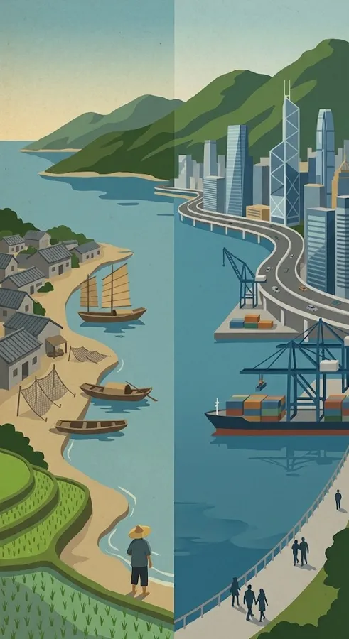
Cientos de millones de campesinos emigraron a las ciudades para trabajar en fábricas y obras. Fue la mayor migración de la historia humana. China se convirtió en la «fábrica del mundo»: ropa, juguetes, teléfonos, ordenadores, paneles solares. Construyó en pocos años la mayor red de trenes de alta velocidad del planeta, autopistas, aeropuertos y ciudades enteras. En 2008 organizó los Juegos Olímpicos de Pekín, y en 2010 superó a Japón como segunda economía del mundo.
Según el Banco Mundial, desde 1978 la economía china creció de media más de un 9 % al año, y cerca de 800 millones de personas salieron de la pobreza extrema. Nunca tanta gente había mejorado tanto sus condiciones de vida en tan poco tiempo. Pero el crecimiento también trajo una enorme contaminación, grandes diferencias entre ricos y pobres y entre la costa y el interior, y una burbuja inmobiliaria que en los últimos años ha frenado la economía.
La China de Xi Jinping
En 2012, Xi Jinping se convirtió en secretario general del Partido Comunista, y al año siguiente en presidente. Lanzó una gran campaña contra la corrupción, en la que fueron castigados cientos de miles de funcionarios, y un enorme plan de inversiones en carreteras, puertos y ferrocarriles por Asia, África y Europa, la llamada Nueva Ruta de la Seda. En 2018 se eliminó el límite de dos mandatos para el presidente.
Sus partidarios destacan el aumento del poder y del prestigio de China en el mundo y la estabilidad del país. Sus críticos señalan la concentración del poder en una sola persona, la vigilancia de la población con cámaras y tecnología digital, la represión en Hong Kong tras las grandes protestas de 2019, y las denuncias de organizaciones internacionales sobre la situación de los uigures en Xinjiang y de los tibetanos, que el gobierno chino rechaza.
El futuro de Taiwán, donde se refugiaron los nacionalistas en 1949 y que hoy es una democracia con gobierno propio, sigue siendo uno de los grandes asuntos pendientes. Pekín la considera parte de China y aspira a la reunificación; la mayoría de los taiwaneses prefieren mantener su situación actual.
Hacia la Luna
China es hoy también una potencia científica y tecnológica. En 2019, la sonda Chang'e 4 fue la primera de la historia en posarse en la cara oculta de la Luna. En 2022 se completó la estación espacial Tiangong, «palacio celestial», y en 2024 otra sonda trajo a la Tierra las primeras muestras de la cara oculta. Las empresas chinas fabrican la mayor parte de los paneles solares, las baterías y los coches eléctricos del mundo.
Todo bajo el cielo, otra vez
Empezamos este libro junto a un río del color de la tierra, con aldeas de campesinos que guardaban mijo en silos excavados en el loess. Hemos visto reinos que se unían y se rompían, emperadores que se creían hijos del Cielo, inventos que cambiaron el mundo y catástrofes que costaron millones de vidas. Hemos visto también cómo, una y otra vez, China volvía a unirse después de cada caída.
Hoy, los dirigentes chinos hablan del «gran rejuvenecimiento de la nación china» y de devolver al país el lugar que creen que le corresponde en el mundo. Qué significará eso para los propios chinos y para los demás es una de las grandes preguntas de nuestro siglo. La historia, que en China tiene más de tres mil años escritos, todavía no ha dado su respuesta.